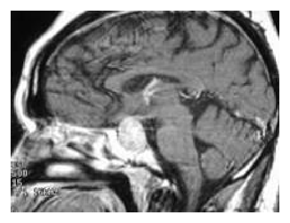
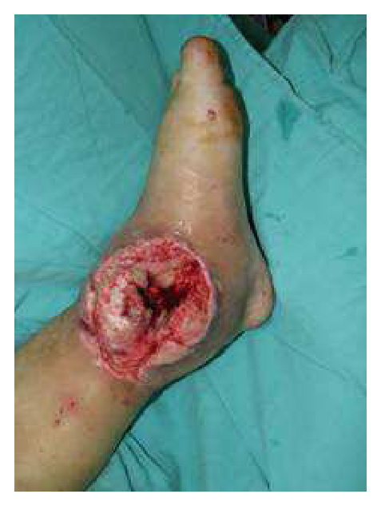
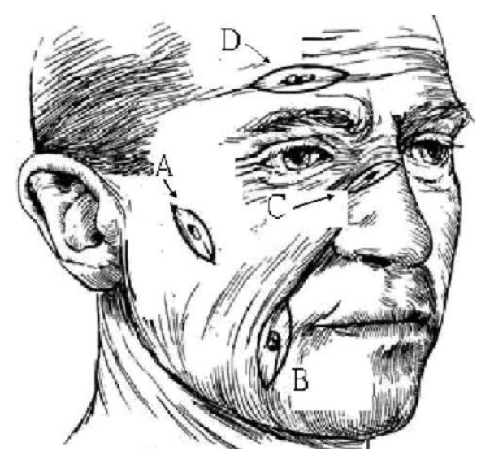
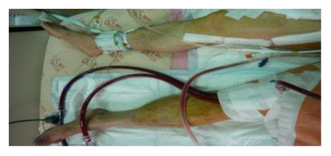
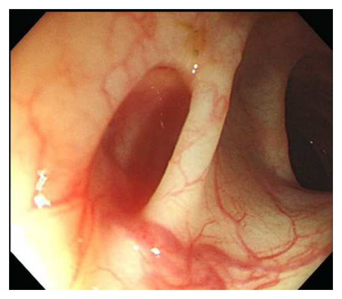
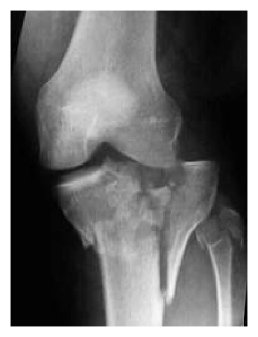
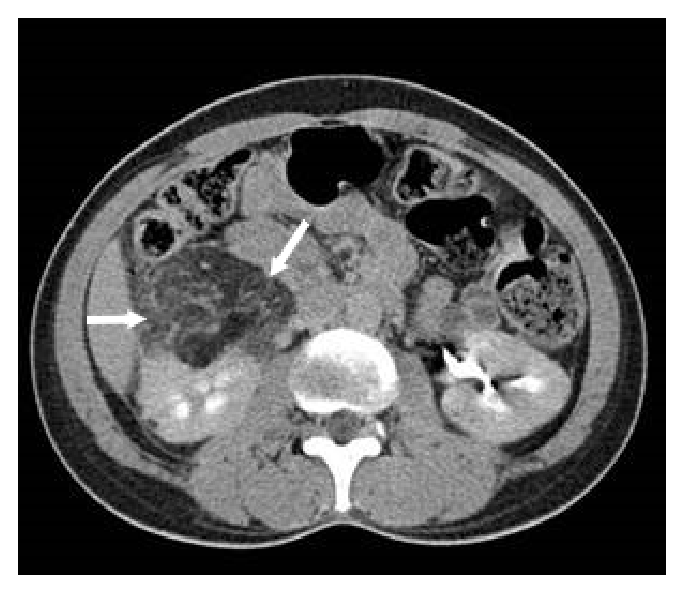
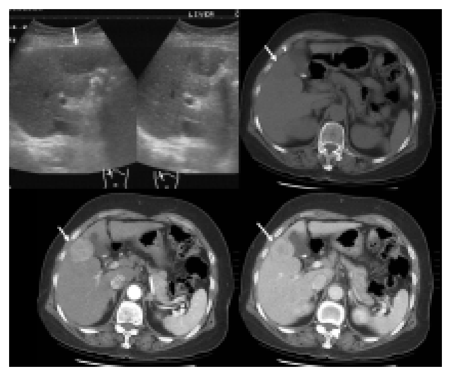

開卷有益 ／
醫師 ／ 醫學（五）（包括外科、骨科、泌尿科等科目及其相關臨床實例與醫學倫理） ／ 107 年第 1 次107 年第 1 次醫師醫學（五）（包括外科、骨科、泌尿科等科目及其相關臨床實例與醫學倫理）試題與答案
這一頁是民國 107 年第 1 次醫師醫學（五）（包括外科、骨科、泌尿科等科目及其相關臨床實例與醫學倫理）的整份歷屆試題，共 80 題，題目與標準答案出自考選部「國家考試試題及測驗式試題答案」開放資料，其中 80 題附有詳解。以下逐題列出題幹、選項與答案；要計時作答或記錄成績，請用線上練習。
考選部原始場次代碼：107020
線上作答這一科 →
全部 80 題
第 1 題
下列與腹部腔室症候群（abdominal compartment syndrome）相關的症狀，何者錯誤？
（A） 腹內壓突然增加（B） 小便量減少（C） 缺氧（hypoxia）（D） 血壓正常答案：（D）
詳解與考點 正解：腹內壓升高已造成器官灌流受損的腹部腔室症候群。腹內壓上升會壓迫腎臟與下腔靜脈、限制橫膈運動，導致少尿、缺氧與血流動力學惡化；血壓可因休克或器官灌流下降而受影響，不能把血壓正常當成相關症狀，故 D 錯誤。
A：腹內壓增加是腹部腔室症候群的基本病理生理與診斷核心，敘述正確，非答案。
B：腎靜脈鬱血、腎灌流壓下降及腎實質受壓可造成尿量減少，非答案。
C：腹壓升高推擠橫膈、降低肺順應性並使通氣困難，可出現低氧，非答案。
本題考點：腹部腔室症候群（abdominal compartment syndrome）——腹內壓上升造成腎臟、呼吸與循環器官功能障礙；少尿（oliguria）與低氧（hypoxia）是重要警訊。
第 2 題
外傷病人使用各種輸液及血液製品來復甦急救，其目的在於使人體各個組織都能得到充足組織灌流（tissueperfusion）。尿液的排出量為一客觀實用之定量指標，則下列何者為正確指標？
（A） 成人大於1毫升／公斤（體重）／小時，小孩大於0.5 毫升／公斤（體重）／小時（B） 成人大於0.5毫升／公斤（體重）／小時，小孩大於1毫升／公斤（體重）／小時（C） 成人大於1毫升／公斤（體重）／小時，小孩大於1毫升／公斤（體重）／小時（D） 成人大於0.5毫升／公斤（體重）／小時，小孩大於0.5毫升／公斤（體重）／小時答案：（B）
詳解與考點 正解：以尿量作為創傷復甦組織灌流的床邊指標。成人目標尿量通常至少 0.5 mL/kg/hr，兒童因代謝需求較高，目標通常至少 1 mL/kg/hr，故選 B。這些數值是常用的床邊復甦門檻，仍須隨年齡、腎功能與最新創傷流程個別判讀，因此本題以既有選項的經典指標作答。
A：把成人與兒童的目標顛倒；成人以 1 mL/kg/hr 為門檻過高，而兒童 0.5 mL/kg/hr 又偏低，非答案。
C：兒童目標正確，但成人目標寫成 1 mL/kg/hr，並非一般創傷復甦的常用成人門檻，非答案。
D：成人目標正確，但兒童目標被低估為 0.5 mL/kg/hr，非答案。
本題考點：創傷復甦終點（trauma resuscitation endpoint）——尿量（urine output）可反映腎臟灌流；成人常以至少 0.5 mL/kg/hr、兒童至少 1 mL/kg/hr 作為實用目標。
第 3 題
下列何者不是器官移植之後使用的抗排斥藥物？
（A） basiliximab（B） rabbit antithymocyte globulin（C） tacrolimus（D） valacyclovir答案：（D）
詳解與考點 正解：valacyclovir 是抗病毒藥，為 acyclovir 的前驅藥，主要用於單純疱疹病毒與水痘帶狀疱疹病毒感染的治療或預防；器官移植後雖可能因免疫抑制而使用它預防病毒再活化，但它不直接抑制宿主的排斥反應，故選 D。
A：basiliximab 是針對活化 T 細胞 CD25（interleukin-2 receptor alpha chain）的單株抗體，可阻斷 IL-2 訊號，常作為移植誘導期的免疫抑制藥物，能降低急性排斥風險，故不是答案。
B：rabbit antithymocyte globulin 是多株抗體製劑，可耗竭或顯著抑制 T 淋巴球，常用於高免疫風險病人的移植誘導治療，也可用於治療急性細胞性排斥，屬抗排斥治療，故不是答案。
C：tacrolimus 是鈣調神經磷酸酶抑制劑（calcineurin inhibitor），藉由抑制 T 細胞活化與 IL-2 轉錄，作為器官移植後常用的維持性免疫抑制藥物，故不是答案。
本題考點：器官移植免疫抑制（transplant immunosuppression）可分為誘導治療與維持治療；basiliximab 與 rabbit antithymocyte globulin 常用於誘導免疫抑制；tacrolimus 為維持治療核心的鈣調神經磷酸酶抑制劑；valacyclovir 則是移植後感染預防或治療用的抗病毒藥（antiviral agent），不是抗排斥藥物。
第 4 題
下列何者不是脫離呼吸器（weaning from ventilator）的條件？
（A） 呼吸速率 < 25 / minute（B） 動脈血氧氣分壓（ PaO2）> 70 mmHg（FiO2 40%）（C） 潮氣量（tidal volume）5～6 mL/kg（D） 每分鐘通氣量（minute ventilation）> 9 L / minute答案：（D）
詳解與考點 正解：脫離呼吸器的條件中，每分鐘通氣量應以可接受的上限門檻判斷，而非將大於 9 L/min 當作正向條件；此選項的數值界線有歧義，故本題以 D 為不適當條件。
A：呼吸速率低於 25/min 表示沒有明顯呼吸急促，是評估自主呼吸準備度的合理條件，非答案。
B：在 FiO2 40% 下 PaO2 大於 70 mmHg 顯示氧合尚可，可支持進一步評估脫離，非答案。
C：足夠潮氣量是維持有效肺泡通氣的必要條件，5-6 mL/kg 可作為是否具備自主通氣能力的參考，非答案。
本題考點：呼吸器脫離（weaning from mechanical ventilation）須同時具備可接受的氧合、呼吸速率、潮氣量與呼吸功；每分鐘通氣量（minute ventilation）須以整體臨床狀況與上限型門檻判斷。
第 5 題
外傷病人有下列何種情況時不做腹部電腦斷層攝影檢查（abdominal computed tomography）？
（A） 腹部鈍挫傷（abdominal blunt trauma）（B） 評估是否有胰臟受傷（C） 身體評估無法判斷腹部是否受傷（D） 病人血壓為65〜72 mmHg，脈搏為108〜112 /分鐘，呼吸20〜25 /分鐘答案：（D）
詳解與考點 正解：血壓 65～72 mmHg 且心搏快，表示持續血流動力學不穩定。腹部電腦斷層需將病人送離急救區，且不能取代不穩定傷患的立即復甦與出血控制，因此此時不做腹部 CT，選 D。
A：腹部鈍挫傷在血流動力學穩定且有適應症時，腹部 CT 可評估實質器官傷害，非答案。
B：胰臟傷害的臨床表現可能不明顯，穩定病人可藉腹部 CT 協助評估，非答案。
C：身體檢查無法可靠判斷腹部是否受傷時，若病人穩定，腹部 CT 有助釐清隱匿傷害，非答案。
本題考點：創傷影像選擇（trauma imaging）——腹部電腦斷層（abdominal computed tomography）適用於血流動力學穩定者；不穩定傷患優先復甦與止血控制，避免為 CT 延誤處置。
第 6 題
下列何者是治療麻醉氣體引起的惡性高溫（malignant hyperthermia）最主要的藥物？
（A） propranolol（B） dantrolene（C） doxazosin（D） nifedipine答案：（B）
詳解與考點 正解：麻醉誘發的惡性高溫，核心是骨骼肌鈣離子失控釋放與持續代謝亢進。dantrolene 可抑制骨骼肌細胞內鈣離子釋放，是最主要的特異性治療藥物，故選 B。
A：propranolol 是 β 阻斷劑，可影響心率，但不能解除惡性高溫的骨骼肌鈣離子異常，非答案。
C：doxazosin 是 α1 阻斷劑，主要用於高血壓或下泌尿道症狀，非惡性高溫的特異性治療，非答案。
D：nifedipine 是鈣離子通道阻斷劑，作用於平滑肌與心肌鈣通道，不是治療惡性高溫的 dantrolene 替代品，非答案。
本題考點：惡性高溫（malignant hyperthermia）——麻醉藥誘發的骨骼肌代謝危象；dantrolene 抑制肌漿網鈣離子釋放，並須立即停用誘發藥物與支持性處置。
第 7 題
下列有關微量元素（trace element） 的敘述何者錯誤？
（A） beriberi disease是因為缺乏硒（selemuim）（B） 缺乏鋅（zinc）會造成禿頭（alopecia）（C） 接受過胃切除的病患容易缺乏鐵（iron）（D） 缺乏vitamin D會造成骨質疏鬆（osteoporosis）答案：（A）
詳解與考點 正解：腳氣病（beriberi）的營養素缺乏原因。beriberi 是維生素 B1（thiamine）缺乏所致，並非硒缺乏，故 A 錯誤。
B：鋅缺乏可造成掉髮、皮膚病灶、味覺改變與傷口癒合不良，禿頭是可能表現，非答案。
C：胃切除後胃酸減少、攝食與吸收改變，容易發生鐵缺乏及缺鐵性貧血，敘述正確，非答案。
D：維生素 D 缺乏會減少鈣磷代謝與骨礦化支持，長期可促成骨質疏鬆或骨軟化相關問題，非答案。
本題考點：硫胺素缺乏（thiamine deficiency）——造成腳氣病（beriberi disease）；鋅（zinc）缺乏可有掉髮，胃切除後常見鐵缺乏（iron deficiency）。
第 8 題
低血容性休克（hypovolemic shock）是下列那一個情形？中心靜脈壓（central venous pressure），動脈壓（arterial blood pressure），心輸出量（cardiac output），混合靜脈血氧飽和度（mixed venous oxygenation saturation）
中心靜脈壓 動脈壓 心輸出量 混合靜脈血氧飽和度 A ↓ ↓ ↓ ↓ B ↑ ↓ ↓ ↓ C ↑ ↓ ↓ ↑ D ↑ ↑ ↑ ↓
（A） 中心靜脈壓↓、動脈壓↓、心輸出量↓、混合靜脈血氧飽和度↓（B） 中心靜脈壓↑、動脈壓↓、心輸出量↓、混合靜脈血氧飽和度↓（C） 中心靜脈壓↑、動脈壓↓、心輸出量↓、混合靜脈血氧飽和度↑（D） 中心靜脈壓↑、動脈壓↑、心輸出量↑、混合靜脈血氧飽和度↓答案：（A）
詳解與考點 正解：低血容性休克因循環血量不足而使前負荷與心輸出量下降。表中（A）的中心靜脈壓、動脈壓、心輸出量、混合靜脈血氧飽和度均下降，依序符合靜脈回流減少、灌流壓下降、輸出量下降及組織氧氣萃取增加的結果，故選 A。
B：此列的動脈壓、心輸出量與混合靜脈血氧飽和度下降雖可見於休克，但中心靜脈壓上升與單純低血容造成的前負荷下降不符，非答案。
C：中心靜脈壓與混合靜脈血氧飽和度上升，不符合典型低血容時靜脈回流減少且組織增加氧氣萃取的型態，非答案。
D：中心靜脈壓、動脈壓及心輸出量皆上升，與低血容性休克的低前負荷、低輸出狀態相反，非答案。
本題考點：低血容性休克（hypovolemic shock）——血容量流失使中心靜脈壓（central venous pressure）、心輸出量（cardiac output）與動脈壓下降；混合靜脈血氧飽和度（mixed venous oxygen saturation）因氧氣萃取增加而下降。
第 9 題
28歲工人，工作時搬運重物滑倒撞及肩膀，腋下瘀青腫脹疼痛，發現手臂麻木且無力抬高。經X光檢查後並無骨折或脫臼情形。此病患最有可能是下列那一條神經受傷？
（A） 正中神經（median nerve）（B） 尺神經（ulnar nerve）（C） 橈神經（radial nerve）（D） 臂神經叢（brachial plexus）答案：（D）
詳解與考點 正解：肩部與腋下外傷後，出現手臂廣泛麻木與無力抬高，且沒有骨折或脫臼。腋下瘀血腫脹可牽拉、壓迫或挫傷臂神經叢（brachial plexus），並同時影響多個周邊神經支配區，因此最符合 D。
A：正中神經損傷主要影響前臂與手部特定感覺區及拇指對掌等功能，難以解釋肩部抬高無力與廣泛手臂症狀，非答案。
B：尺神經損傷主要造成小指側感覺異常與手內在肌無力，分布過於侷限，非答案。
C：橈神經損傷常見腕下垂與手背橈側感覺異常；單一橈神經病變不能完整解釋腋下外傷後的抬肩無力與廣泛麻木，非答案。
本題考點：臂神經叢損傷（brachial plexus injury）——肩部、鎖骨或腋下創傷可傷及多條神經纖維，造成超出單一周邊神經分布的感覺與運動缺損；周邊神經定位（peripheral nerve localization）須比對症狀範圍。
第 10 題
下列有關顱內動靜脈畸形（arteriovenous malformation, AVM）的敘述，何者錯誤？
（A） AVM的組成包括灌流的動脈，引流的靜脈，交通動靜脈的微血管（B） AVM常出現的症狀包括有出血、癲癇及局部缺血（C） 雖然CT及MRI可以診斷，但最好的診斷工具為顱內四條血管的血管攝影（four –vessels cerebralangiography）（D） AVM 24小時內再出血的機率比動脈瘤低答案：（A）
詳解與考點 正解：AVM 的病灶核心是動脈直接經由畸形血管團（nidus）與靜脈相通，缺乏正常介入的微血管床；（A）把它說成「交通動靜脈的微血管」會誤認仍有正常微血管網，故選 A。
B：AVM 可因破裂造成顱內出血，也可表現為癲癇或因血流竊盜造成局部缺血症狀，敘述正確。
C：CT、MRI 可辨識出血與病灶線索，導管腦血管攝影可詳細顯示供應動脈、病灶團與引流靜脈，是治療規劃的重要檢查，敘述正確。
D：動脈瘤破裂後的再出血風險特別集中於早期，AVM 則通常以較長期自然史風險描述；然而兩者 24 小時再出血率的直接比較並非本題提供的判準，此項具爭點。
本題考點：腦動靜脈畸形（cerebral arteriovenous malformation, AVM）由供應動脈、畸形血管團（nidus）與引流靜脈構成，缺乏正常毛細血管床；腦血管攝影（cerebral angiography）用於詳細血管解剖評估。
第 11 題
下列關於glioblastoma multiforme的治療，何者正確？
（A） 不論接受何種治療，病患都有良好的預後（B） 手術切除加術後放射線治療及化學治療是目前效果最佳的治療方式（C） 若可手術切除，可不做術後放射線治療及化學治療（D） 腫瘤可與周邊正常組織清楚區分，容易手術完全切除答案：（B）
詳解與考點 正解：glioblastoma multiforme 屬高度侵襲性、浸潤性的原發腦腫瘤，治療需多專科合併。可行時先做最大安全手術切除，並接續放射線治療及化學治療，是目前效果最佳的標準整合策略，故選 B。
A：glioblastoma multiforme 的預後普遍不佳，不能說不論治療皆有良好預後，非答案。
C：即使已進行切除，腫瘤常有顯微浸潤殘留，術後放射線與化學治療仍是重要治療組成，不能逕行省略，非答案。
D：此腫瘤會浸潤周邊腦組織，影像或手術所見未必有清楚邊界；正因如此，完全切除困難，非答案。
本題考點：膠質母細胞瘤（glioblastoma multiforme）——高度浸潤性惡性膠質瘤，採最大安全切除（maximal safe resection）合併術後放射線治療與化學治療；浸潤性生長造成完全切除困難。
第 12 題
對於頭部外傷的病人，下列何種方法降低腦壓的效果最差？
（A） 頭抬高30度（B） 使用mannitol或glycerol等藥物（C） hypoventilation（D） craniectomy答案：（C）
詳解與考點 正解：本題的關鍵是「降低腦壓」；有效的呼吸策略應是短暫 hyperventilation，而不是 hypoventilation。過度換氣使 PaCO2 降低，腦血管收縮、腦血流與腦血容量下降，才可能暫時降低顱內壓；hypoventilation 反而使 CO2 滯留、腦血管擴張，可能增加腦血容量與顱內壓，故效果最差的是 C。
A：頭部抬高約 30 度可促進頸靜脈回流、減少顱內靜脈鬱血，通常有助降低顱內壓；重點是避免頸部扭曲或受壓，因此不是最差的方法。
B：mannitol 或 glycerol 屬滲透性治療，可藉滲透壓梯度將腦組織水分移至血管內，適用於需要急性降低腦壓的情境，故非答案。
D：craniectomy 是減壓性手術，藉移除部分顱骨提供腦組織腫脹的空間，對難治性顱內高壓可有效減壓，並非效果最差。
本題考點：顱內壓控制（intracranial pressure management）——抬高床頭、滲透治療與減壓手術可降低顱內壓；二氧化碳反應性（carbon dioxide reactivity）——低 PaCO2 造成腦血管收縮，CO2 滯留則可能惡化顱內高壓。
第 13 題
下列有關脊髓腫瘤之敘述，何者錯誤？
（A） 髓膜外（extradural）的腫瘤往往是良性的（B） 髓膜內（intradural）、脊髓外（extramedullary）的腫瘤以meningioma及schwannoma最常見（C） 脊髓內（intramedullary）腫瘤以astrocytoma最常見（D） 脊髓惡性腫瘤的預後不良答案：（A）
詳解與考點 正解：髓膜外腫瘤常由脊椎或其他部位轉移而來，惡性病灶並不少見，不能概稱「往往是良性」，故選 A。
B：髓膜內、脊髓外腫瘤最常見的是 meningioma 與 schwannoma；兩者雖起源不同，皆可壓迫脊髓而產生症狀，敘述正確。
C：脊髓內腫瘤的常見類型具有年齡差異：astrocytoma 傳統上較偏兒童，成人則以 ependymoma 更常見。選項未限定年齡，故其「最常見」的表述有歧義，但非本題命題所指的錯誤。
D：脊髓惡性腫瘤因局部侵犯、神經功能受損及治療限制，整體預後較差，敘述正確。
本題考點：脊髓腫瘤定位（spinal cord tumor localization）依 extradural、intradural-extramedullary 與 intramedullary 分類；髓內腫瘤（intramedullary tumor）常見種類須依年齡層判讀。
第 14 題
40歲男性病患發現有兩側顳葉偏盲（bitemporal hemianopsia）症狀，泌乳激素值為49 ng/mL（prolactinlevel of 49 ng/mL），磁振造影檢查（MRI）如下列圖示，對此病灶最佳治療選擇為何？

（A） bromocriptine藥物治療（B） 先投與bromocriptine藥物治療， 隨後手術治療（C） 放射治療（radiation therapy）（D） 手術治療答案：（D）
詳解與考點 正解：MRI 矢狀面可見鞍區大型腫塊向上延伸壓迫視交叉，符合造成兩側顳葉偏盲的垂體巨腺瘤（pituitary macroadenoma）。泌乳激素僅 49 ng/mL，屬輕度升高，較支持腫瘤壓迫垂體柄造成的泌乳激素升高（stalk effect），而非典型分泌大量泌乳激素的泌乳激素瘤。已有視野缺損代表視交叉受壓，應以經蝶竇手術（transsphenoidal surgery）減壓並切除病灶，故選 D。
A：bromocriptine 為多巴胺促效劑（dopamine agonist），主要用於泌乳激素瘤（prolactinoma），可抑制泌乳激素分泌並縮小該類腫瘤；本題泌乳激素升高程度與影像造成的壓迫症狀較符合非功能性垂體巨腺瘤合併 stalk effect，單用藥物不能作為最佳處置。
B：若是對多巴胺促效劑反應良好的泌乳激素瘤，即使有視野症狀通常仍優先藥物治療，並非例行地先用 bromocriptine 再接手術；本題應優先解除視交叉的機械性壓迫，故此處置順序不適當。
C：放射治療（radiation therapy）起效較慢，通常保留給手術後殘存或復發、且不適合再次手術的垂體腫瘤；無法迅速改善本題已出現的視交叉壓迫與兩側顳葉偏盲，故不是最佳初始治療。
本題考點：垂體巨腺瘤（pituitary macroadenoma）可向上壓迫視交叉（optic chiasm）造成兩側顳葉偏盲；垂體柄效應（stalk effect）會使泌乳激素輕度升高，須與泌乳激素瘤（prolactinoma）的顯著高泌乳激素血症區分；合併視野缺損的壓迫性非功能性垂體巨腺瘤以經蝶竇手術（transsphenoidal surgery）為主要治療。
第 15 題
嚴重的眼瞼下垂（ptosis）應採取下列那一種手術方式比較適合？
（A） 筋膜懸吊（fascial sling）（B） 提瞼肌切除（levator resection）（C） 提瞼肌懸吊（levator plication）（D） 提瞼肌前移（levator advancement）答案：（A）
詳解與考點 正解：嚴重眼瞼下垂的核心是提瞼肌功能通常不足，無法單靠縮短或前移提瞼肌得到可靠抬瞼效果。筋膜懸吊（fascial sling）把上瞼連接至額肌，讓病人以額肌力量協助抬瞼，最適合嚴重 ptosis，故選 A。
B：提瞼肌切除（levator resection）是縮短提瞼肌以增強抬瞼力，較適用於仍有一定提瞼肌功能者；嚴重 ptosis 常因肌力太差而效果有限。
C：提瞼肌懸吊（levator plication）也是藉調整或縮短既有提瞼肌來矯正，前提仍是保有可利用的肌肉功能，故不如額肌筋膜懸吊適切。
D：提瞼肌前移（levator advancement）常用於腱膜性 ptosis，將鬆脫或下移的提瞼肌腱膜重新固定；它看似能直接拉高眼瞼，但嚴重型若本身肌力不足，並非首選。
本題考點：眼瞼下垂手術（ptosis surgery）——手術選擇取決於 levator function；額肌懸吊（frontalis suspension/fascial sling）適用於嚴重下垂或提瞼肌功能不佳。
第 16 題
一位60歲男性患者因車禍被送來醫院，經理學檢查發現於左下肢小腿遠端1/3處，有一約10公分直徑缺損，從傷口上可見到脛骨及肌腱外露現象（如下圖），X光檢查也呈現骨折狀況，病人的其他身體檢查及實驗室檢查都正常。根據「重建選項」（reconstructive options）的建議，下列何種重建方式是第一選擇？

（A） 部分層皮植皮術（split-thickness skin graft）（B） 局部前移皮膚皮瓣（local advanced skin flap）（C） 局部肌皮瓣（regional muscle flap）（D） 游離皮瓣移植（free tissue transfer）答案：（D）
詳解與考點 正解：圖中左小腿遠端可見大範圍軟組織缺損，脛骨與肌腱外露，且合併骨折；缺損直徑約10 cm，位於血流與局部可動組織都較有限的小腿遠端1/3。此種複雜開放性下肢創傷需要帶有可靠血液供應的組織覆蓋，以保護骨與肌腱、協助骨折處癒合並降低感染風險。游離皮瓣移植（free tissue transfer）可將足量、血供良好的皮膚或肌肉皮瓣連同血管移植至受區，因此是第一選擇，故選 D。
A：部分層皮植皮術（split-thickness skin graft）必須有血流良好的肉芽床或軟組織床才能存活；圖示脛骨及肌腱直接外露，缺乏可供植皮血管新生的床面，直接植皮容易失敗，也不能提供足夠的深層組織覆蓋。
B：局部前移皮膚皮瓣（local advanced skin flap）可處理較小、周邊皮膚鬆弛且血流完整的缺損；本題位於小腿遠端、創面約10 cm且伴骨折，周圍可前移的皮膚有限，強行前移可能張力過大或影響皮瓣血流，覆蓋範圍不足。
C：局部肌皮瓣（regional muscle flap）雖能以帶血流的組織覆蓋外露骨骼，但小腿遠端可旋轉至該處的局部肌肉選擇及可達範圍有限；面對如此大的遠端缺損，通常難以提供充分而可靠的覆蓋，故不如（D）游離皮瓣移植適切。
本題考點：重建階梯（reconstructive ladder）與重建選項（reconstructive options）——依缺損深度、大小、位置與受區血流選擇重建方式；複雜小腿遠端創傷（distal-third leg defect）合併骨或肌腱外露時，常需游離組織移植（free tissue transfer）提供有血供的覆蓋。
第 17 題
40歲健康工人於密閉工廠工作時遭遇火警，逃生通道卻又被雜物堵塞。此工人經過一段時間搬離雜物才脫離火場。現場濃煙密布，他吸入不少煙霧；加上他的臉被燻黑、鼻毛及前額毛髮又被燒焦、兩側上肢也被燒傷，因而來急診求診。關於他的傷勢及醫療處置，下列敘述何者錯誤？
（A） 此病患有可能遭受肺部吸入性灼傷（inhalation injury）（B） 因為此傷患沒有聲音沙啞（hoarseness）、哮喘（wheezing）、或含碳渣痰液（carbonaceoussputum），胸部X光也沒有異常因此不應該立即進行支氣管鏡或氣管插管等侵入性診治。（C） 臨床研究顯示，液體限制（fluid restriction）無法預防吸入性灼傷引起的肺水腫（D） 在後續的治療上，除非有證據顯示肺臟感染，不建議一開始就給予預防性抗生素答案：（B）
詳解與考點 正解：密閉火場、濃煙吸入、臉部燻黑及鼻毛燒焦都是吸入性灼傷的高風險線索；上呼吸道水腫可延遲出現，早期胸部 X 光也可能正常。因此不能因暫無聲音沙啞、喘鳴或碳渣痰就排除危險，更不應以此作為不及早評估氣道、必要時插管的理由，故錯誤的是 B。
A：密閉空間火災與明顯臉部熱傷害高度提示 inhalation injury，可能涉及上呼吸道熱傷害、下呼吸道化學性傷害及毒性氣體暴露，敘述正確。
C：吸入性灼傷後的肺水腫並不能單靠液體限制預防；復甦仍須依整體灌流狀態審慎處置，故此敘述正確。
D：預防性抗生素不能取代感染判斷，且可能增加抗藥性與不良反應；無肺部感染證據時通常不會一開始即常規使用，故非答案。
本題考點：吸入性灼傷（inhalation injury）——密閉空間火災與臉部燒傷是重要警訊，氣道水腫可進展；氣道保護（airway protection）——早期症狀與胸部 X 光正常不能排除後續上呼吸道阻塞。
第 18 題
病人都希望表皮腫瘤切除時留下的疤痕不明顯，下列的切痕設計那一個較不能達到良好的結果？

（A） A（B） B（C） C（D） D答案：（A）
詳解與考點 正解：圖中（A）位於顳側臉頰，切線呈近垂直走向，未順著該處自然皮膚皺褶與鬆弛皮膚張力線，傷口兩側較易受到牽拉；癒合後較可能出現疤痕變寬或明顯的情形。表皮腫瘤切除的切口應盡量置於自然皺褶、皮膚張力較小的方向，故較不能獲得良好美容結果的是 A。
B：圖中（B）位於口角至下頰附近，切線大致順著臉頰既有的斜向皺褶與表情線走行，可使傷口張力較小，疤痕較容易隱藏，故不是本題答案。
C：圖中（C）位於眼下至上頰，切線呈短橫斜向並順應局部自然皮膚線，故較能達到美容效果。
D：圖中（D）位於前額，切線採橫向並順著前額皺褶走行。前額常見的自然皺褶為橫向，將切口置於其中可降低疤痕辨識度，故非較不良的設計。
本題考點：鬆弛皮膚張力線（relaxed skin tension lines, RSTL）與皮膚切口設計；美容切口應盡量平行自然皺褶或隱藏於臉部美學單位交界，以減少傷口張力、疤痕增寬及可見度。
第 19 題
下圖45歲男性，急性冠狀動脈阻塞導至心因性休克，緊急做完冠狀動脈繞道手術後，心臟收縮能力不好，因此放上了主動脈氣球幫浦及葉克膜氧合器，送往加護病房觀察，左腳六個小時後發現有鼓脹的情形，下列敘述何者錯誤？①肢端的脈搏先確認 ②有可能血液中肌酸激酶（CK）會提高 ③可以量測腔室的壓力，若大於20 mmHg可能要作筋膜切開手術 ④小腿有五個腔室：anterior、deep posterior、superficial posterior、lateral和medial

（A） 僅①②（B） ②③（C） ③④（D） ①②④答案：（C）
詳解與考點 正解：圖中左下肢在主動脈氣球幫浦與葉克膜管路旁出現鼓脹，須警覺下肢缺血再灌流或出血造成的急性腔室症候群（acute compartment syndrome）。腔室內壓絕對值通常達約30 mmHg以上，或舒張壓與腔室壓之差（delta pressure）過低時，才是支持緊急筋膜切開術的重要壓力依據；以大於20 mmHg即可能要手術的說法過於寬鬆。小腿標準上有4個腔室：anterior、lateral、superficial posterior與deep posterior，沒有獨立的medial腔室。因此錯誤的是③④，故選C。
A：此選項只列①②；（①）先評估肢端脈搏與灌流狀態，有助辨別導管相關肢體缺血，且（②）缺血性肌肉損傷或橫紋肌溶解可使血中CK上升，兩項皆可成立，未包含錯誤敘述。
B：（②）CK上升是可能的臨床變化；但本選項雖納入錯誤的（③），卻漏掉同樣錯誤的（④），故非正確組合。
D：（①）與（②）均為正確敘述，而（④）雖錯誤，卻漏列（③），不能完整選出題目所問的錯誤敘述。
本題考點：急性腔室症候群（acute compartment syndrome）可見疼痛、緊繃腫脹、感覺或運動異常，脈搏存在不能排除診斷；筋膜切開術（fasciotomy）的判斷須整合臨床缺血徵象與腔室壓／delta pressure；小腿腔室（leg compartments）包括前、外側、淺後與深後4個腔室。
第 20 題
傷口重建的原則及方法有①skin graft ②myocutaneous flap ③free flap ④linear closure ⑤skin flap，重建的思考順序是：
（A） ①②③④⑤（B） ④⑤①③②（C） ④①⑤②③（D） ④⑤③①②答案：（C）
詳解與考點 正解：傷口重建遵循「由最簡單、侵襲最小的方法，逐步走向較複雜方法」的重建階梯（reconstructive ladder）。先嘗試 linear closure（④），不能直接縫合時依序考慮 skin graft（①）、局部 skin flap（⑤）、帶血管蒂的 myocutaneous flap（②），最後才是技術最複雜的 free flap（③）；題目所列最符合的順序為④①⑤②③，故選 C。
A：①②③④⑤把最簡單的 linear closure 放到後段，違反優先採最簡單閉合方式的原則。
B：④⑤①③②雖先放 linear closure，但把 free flap（③）排在 myocutaneous flap（②）之前，未依由較簡單到較複雜的階梯安排。
D：④⑤③①②在局部皮瓣後先跳到 free flap，卻把 skin graft 留到後面，增加不必要的重建複雜度。
本題考點：重建階梯（reconstructive ladder）——傷口重建先選能達成目標的最簡單方法；直接閉合（primary linear closure）、植皮（skin graft）、局部或帶蒂皮瓣（flap）及游離皮瓣（free flap）須依缺損條件逐步選用。
第 21 題
何種類型的心房中膈缺損（atrial septal defect）最常合併部份肺靜脈回流異常（partial abnormal pulmonaryvenous return）？
（A） primum type（B） secondum type（C） sinus venosus type（D） coronary septal defect type答案：（C）
詳解與考點 正解：sinus venosus type 心房中膈缺損位於上腔靜脈或下腔靜脈與右心房交界附近，常與鄰近肺靜脈回流連接異常同時出現，因此最常合併部分肺靜脈回流異常（partial anomalous pulmonary venous return），故選 C。
A：primum type 位於房室中隔下方，常與房室中隔缺損譜系及房室瓣異常相關，並非最典型合併肺靜脈回流異常的類型。
B：secondum type 位於卵圓窩區，是常見 ASD 類型；雖同樣可造成左向右分流，但與部分肺靜脈回流異常的特異關聯不如 sinus venosus type。
D：coronary septal defect 並非典型 ASD 分類中最常與部分肺靜脈回流異常相連的病灶，故不符。
本題考點：心房中膈缺損（atrial septal defect, ASD）——sinus venosus ASD 與部分肺靜脈回流異常（partial anomalous pulmonary venous return）密切相關；先天性心臟病的解剖位置可預測其合併畸形。
第 22 題
下列有關原發性心臟內腫瘤之敘述，何者錯誤？
（A） 原發性心臟內腫瘤約25%為良性，約75%為惡性（B） 成人最常見原發性良性心臟內腫瘤為myxoma（C） 15歲以下孩童最常見原發性良性心臟內腫瘤為rhabdomyoma（D） 即便是原發性良性心臟內腫瘤，一旦有心衰竭、栓塞症狀及感染心內膜炎，便要考慮手術治療答案：（A）
詳解與考點 正解：原發性心臟腫瘤整體罕見，其中多數為良性，而不是多數惡性；A 將良惡性比例顛倒，故為錯誤敘述。
B：成人最常見的原發性良性心臟腫瘤是 myxoma，常見於心房，敘述正確。
C：兒童原發性良性心臟腫瘤以 rhabdomyoma 最具代表性且最常見，故非答案。
D：良性腫瘤仍可能因阻塞血流、造成心衰竭、栓塞或與心內膜炎相關而產生嚴重後果；出現此類臨床問題時應考慮手術，敘述正確。
本題考點：原發性心臟腫瘤（primary cardiac tumor）——多數為良性；心房黏液瘤（myxoma）常見於成人，橫紋肌瘤（rhabdomyoma）常見於兒童；腫瘤的血流動力學與栓塞併發症可構成手術適應症。
第 23 題
下列有關主動脈剝離（aortic dissection）之敘述，何者錯誤？
（A） 主動脈剝離病人往往合併有高血壓或主動脈瓣膜疾病（B） 診斷的方式包含主動脈攝影、食道超音波、電腦斷層或核磁共振，診斷的sensitivity及specificity皆有80%以上（C） 凡是急性升主動脈剝離（acute type A aortic dissection），需要馬上接受手術治療（D） 在 type A或type B主動脈剝離產生的器官灌注不良（mal-perfusion syndrome）中，以腦部及腸道最常見答案：（D）
詳解與考點 正解：主動脈剝離的器官灌流不良可影響腦、腸、腎與四肢；臨床上以腎臟與下肢等分支灌流受損較常見，不能說「以腦部及腸道最常見」，故錯誤的是 D。
A：高血壓是主動脈剝離的重要危險因子，部分病人也有主動脈瓣或相關結締組織疾病，敘述正確。
B：主動脈攝影、經食道心臟超音波、電腦斷層與核磁共振皆可用於診斷；各檢查的實際表現會隨病人穩定度與設備而異，但皆是臨床重要診斷工具。
C：急性 type A 主動脈剝離涉及升主動脈，可能造成破裂、心包填塞、主動脈瓣逆流或冠狀動脈受累，通常須緊急手術處理，故正確。
本題考點：主動脈剝離（aortic dissection）——type A 累及升主動脈，通常需緊急手術；灌流不良症候群（malperfusion syndrome）可波及腎臟、腸道、腦部與肢體，應依受累分支判讀。
第 24 題
一位56歲男性病人因胸悶住院。他有糖尿病、高血壓、與抽菸史。冠狀動脈血管攝影檢查顯示左冠狀動脈主幹 85% 狹窄、左前降支 80%狹窄、左回旋支 77%狹窄、右冠狀動脈 90%狹窄。下列敘述何者正確？①依冠狀動脈血管攝影檢查前家屬之決定，立即裝置塗藥支架（drug-eluting stent） ②冠狀動脈血管攝影檢查時，經與家屬商量後，立即裝置裸金支架（bared-metal stent） ③裝置支架前，不須請心臟外科醫師向病人及其家屬解釋冠狀動脈繞道手術之優缺點 ④裝置支架時，手術室須準備好，以便可立即進行緊急手術
（A） ①②③（B） 僅①③（C） ②④（D） 僅④答案：（D）
詳解與考點 正解：左主幹加上多支冠狀動脈嚴重狹窄是高風險複雜冠心病，血運重建方式應由病人、介入心臟科與心臟外科共同評估，而非僅依家屬決定後直接置放支架。無論採何種策略，導管介入過程仍須具備緊急外科支援的準備，因此僅④正確，故選 D。
A：①未經完整心臟團隊與病人知情決策即依家屬決定置放塗藥支架，且②、③同樣錯誤，故此組合不成立。
B：①與③都違反完整告知與共同決策原則；尤其③稱不須由心臟外科說明繞道手術優缺點，忽略此病人可能適合的 CABG 選項。
C：②不能只與家屬商量後立即置放裸金屬支架，④雖正確，但此組合因含②而錯。
本題考點：心臟團隊決策（heart team approach）——左主幹及複雜多血管冠心病須比較 PCI 與冠狀動脈繞道手術（CABG）；知情同意（informed consent）——應由病人參與並了解可行治療選項。
第 25 題
下列關於不停跳冠狀動脈繞道手術（off-pump coronary artery bypass grafting）的敘述，何者正確？①須使用heparin ②人工心肺機不需待命 ③不須降低體溫 ④不會引發腦中風
（A） ①②③（B） 僅①③（C） ②④（D） 僅④答案：（B）
詳解與考點 正解：不停跳冠狀動脈繞道手術雖不使用人工心肺機，仍須以 heparin 抗凝，並通常不必為建立人工心肺而進行全身降溫。因此①、③正確，故選 B。
A：②稱人工心肺機不需待命並不恰當；手術中若血流動力不穩或技術需求改變，可能須轉用體外循環，因此應有備援準備。
C：②錯誤，且④「不會引發腦中風」過度絕對；不停跳手術可減少部分主動脈操作，但仍不能把腦中風風險視為零。
D：④忽略手術本身、主動脈粥樣硬化與病人血管風險均可能造成腦中風，故錯。
本題考點：不停跳冠狀動脈繞道手術（off-pump coronary artery bypass grafting）——不以心肺機建立體外循環，但仍需抗凝（heparinization）；圍手術期腦中風（perioperative stroke）可降低但不能保證完全避免。
第 26 題
下列何者為肺部切除手術前最重要的檢查？
（A） total lung capacity（B） vital capacity（C） forced expiratory volume in 1 second（FEV1）（D） expiratory reserve volume答案：（C）
詳解與考點 正解：肺切除前最重要的是估計病人剩餘肺功能是否足以承受切除；FEV1 反映一秒用力吐氣量與氣流受限程度，是術前肺功能風險評估的核心指標，故選 C。
A：total lung capacity 可描述肺總容積與限制型生理，但單獨不如 FEV1 能直接評估切除後呼吸儲備與阻塞程度。
B：vital capacity 反映可動員肺容積，仍不足以取代 FEV1 對氣流阻塞及術後風險的判斷。
D：expiratory reserve volume 只是呼吸儲備的一部分，與術前整體切除耐受性關聯較弱，故非最重要檢查。
本題考點：肺切除術前評估（preoperative pulmonary assessment）——FEV1 是重要基礎指標；預測術後肺功能（predicted postoperative lung function）與運動耐受度可進一步協助判斷手術風險。
第 27 題
最常見的原發氣管內惡性腫瘤為：
（A） adenocarcinoma（B） squamous cell carcinoma（C） small cell carcinoma（D） carcinoid tumor答案：（B）
詳解與考點 正解：原發性氣管惡性腫瘤中，成人最常見的組織型是 squamous cell carcinoma，與吸菸等暴露常有關聯，故選 B。
A：adenocarcinoma 常見於肺部惡性腫瘤，但不是最常見的原發氣管內惡性腫瘤。
C：small cell carcinoma 可侵犯或起源於氣道，但在原發氣管惡性腫瘤中遠不如 squamous cell carcinoma 常見。
D：carcinoid tumor 可見於支氣管且有時呈中央氣道腫瘤，但相較於鱗狀細胞癌並非最常見的氣管惡性腫瘤。
本題考點：原發性氣管腫瘤（primary tracheal tumor）——成人惡性病灶以鱗狀細胞癌（squamous cell carcinoma）最常見；中央氣道腫瘤須與支氣管來源病灶區分。
第 28 題
有關氣管食道瘻管的臨床表現，下列何者較不常見？
（A） 大量的氣管分泌物的產生（B） 呼吸音可聽到stridor（C） X光常可見到胃脹氣的現象（D） 易伴隨呼吸道或肺部感染答案：（B）
詳解與考點 正解：氣管食道瘻管使食道內容物與空氣在氣道、消化道間異常交通，典型問題是誤吸、分泌物增多、反覆肺炎與胃脹氣；stridor 主要提示上呼吸道狹窄，並非較典型或常見的表現，故選 B。
A：瘻管造成分泌物與胃內容物進入呼吸道，可出現大量氣管分泌物，敘述符合常見臨床問題。
C：若氣體經瘻管進入胃腸道，X 光可見胃脹氣，特別是在合併食道閉鎖的新生兒情境是重要線索，故非答案。
D：反覆誤吸會增加呼吸道感染與肺炎風險，是氣管食道瘻管的典型併發症。
本題考點：氣管食道瘻管（tracheoesophageal fistula）——異常交通導致誤吸、肺部感染與腹部脹氣；喘鳴（stridor）較指向上呼吸道阻塞，不是其主要表現。
第 29 題
有關於hiatal hernia之描述，下列何者正確？
（A） sliding hiatal hernia（type I）常伴隨胃酸逆流之症狀（B） paraesophageal hiatal hernia指的是腹部的大腸、小腸等herniation to the chest（C） paraesophageal hiatal hernia與sliding hiatal hernia是不同的兩種情形，不會同時出現（D） 絕大部分的sliding hiatal hernia須接受手術治療答案：（A）
詳解與考點 正解：sliding hiatal hernia（type I）的胃食道交界隨胃的一部分向上滑入胸腔，容易破壞抗逆流屏障，因此常合併胃酸逆流症狀，故選 A。
B：paraesophageal hiatal hernia 是胃的一部分經食道裂孔進入胸腔、胃食道交界未必上移；不是泛指腹部大腸或小腸進入胸腔。
C：paraesophageal 與 sliding 成分可以同時存在，形成混合型裂孔疝氣；將兩者說成絕不會同時出現過度絕對。
D：多數 sliding hiatal hernia 可先依症狀採生活調整與抑酸治療，不是絕大部分都須手術；只有特定併發症或難治症狀才考慮手術。
本題考點：食道裂孔疝氣（hiatal hernia）——type I sliding hernia 常與胃食道逆流（gastroesophageal reflux）相關；paraesophageal hernia 的主要風險較偏向胃嵌頓或扭轉。
第 30 題
下列何者為肺最常見的良性腫瘤？
（A） lipoma（B） leiomyoma（C） hamartoma（D） papilloma答案：（C）
詳解與考點 正解：肺最常見的良性腫瘤是 hamartoma，常由軟骨、脂肪與結締組織等成熟成分混合構成，影像上有時可見典型鈣化或脂肪線索，故選 C。
A：lipoma 可發生於肺或支氣管，但相對少見，不是最常見的肺良性腫瘤。
B：leiomyoma 為平滑肌良性腫瘤，在肺部罕見，故不符。
D：papilloma 可見於呼吸道，部分與吸菸或病毒相關，但發生率不及 hamartoma。
本題考點：肺錯構瘤（pulmonary hamartoma）——最常見的肺良性腫瘤；影像判讀（thoracic imaging）——腫瘤中的脂肪或特徵性鈣化有助鑑別。
第 31 題
關於胃癌之敘述，下列何者錯誤？
（A） Borrmann第三型胃癌（Borrmann type 3）是指潰瘍型胃癌合併胃壁侵犯（ulcerating lesions withinfiltration into gastric wall）（B） 腸型（intestinal type）胃癌較常為分化良好胃癌（well differentiated），且轉移方式較常為血液轉移（hematogenous spread）（C） 瀰漫型（diffuse-type）胃癌在高發生率區域較腸型（intestinal-type）胃癌為多，且預後較差（D） APC（adenomatous polyposis coli）gene mutation（基因突變）較常發生在腸型（intestinal type）胃癌答案：（C）
詳解與考點 正解：胃癌流行病學的關鍵是高發生率地區通常較常見腸型（intestinal type）胃癌，而非瀰漫型較多；C 將此關係說反，故為錯誤敘述。瀰漫型常較未分化、浸潤性強且預後可較差，但不能據此推成其在高發生率區域必較腸型多。
A：Borrmann type 3 為潰瘍浸潤型病灶，潰瘍邊緣與胃壁浸潤是其特徵，敘述正確。
B：腸型胃癌較常呈腺體形成與分化較好，亦較可能經血行轉移；它看似只是在描述組織型態，但重點是與瀰漫型的浸潤性、細胞黏附異常加以區分。
D：APC 基因異常較與腸型胃癌的腺瘤－癌化路徑相關，故非本題錯誤敘述。
本題考點：Lauren 胃癌分類（Lauren classification）——腸型胃癌（intestinal-type gastric cancer）較常與環境危險因子及腺體分化相關；瀰漫型胃癌（diffuse-type gastric cancer）常呈浸潤性生長，與細胞黏附異常有關。
第 32 題
一位50歲男性；最近二週，尿液變深、灰白便、身體發癢、皮膚逐漸變黃，因此到院檢查。身體診察發現鞏膜變黃，下肢無水腫，其CT影像上可見胰臟頭部有4公分左右腫瘤合併總膽管及胰管擴大，針對此病患安排下列處置何者最不適當？
（A） 安排血管攝影栓塞（B） 測定CEA，CA19-9（C） 進行ERCP（endoscopic retrograde cholangiopancreatography）或EUS（endoscopic ultrasonography）合併切片（D） 進行核磁共振膽胰攝影（MRCP）答案：（A）
詳解與考點 正解：深色尿、灰白便、搔癢、黃疸，加上胰頭腫瘤與總膽管、胰管擴張，指向胰頭癌造成的阻塞性黃疸。評估重點是確認病理、膽胰管與血管侵犯及可切除性；血管攝影栓塞不是此情境的常規初始處置，故最不適當的是 A。
B：CEA 與 CA19-9 可作為輔助腫瘤標記，不能單獨診斷或排除癌症，但可納入初步評估與後續追蹤，故非最不適當。
C：ERCP 或 EUS 合併組織取得可協助診斷，並可依臨床需求處理膽道阻塞；它看似侵入性較高，但對病理確認與膽道處置均可能有實際價值。
D：MRCP 可非侵入性評估膽道與胰管擴張及阻塞位置，適合此阻塞性黃疸的影像評估，故非答案。
本題考點：胰頭癌（pancreatic head cancer）——可造成無痛性阻塞性黃疸與雙管徵象（double-duct sign）；內視鏡超音波（endoscopic ultrasonography）與 MRCP 用於病灶、膽胰管及分期評估。
第 33 題
下列何種癌症一般不以胰頭十二指腸切除術（pancreaticoduodenectomy，Whipple's resection）來處理？
（A） 十二指壺腹部癌症（ampulla vater cancer）（B） 胰臟鈎部癌症（pancreatic uncinate cancer）（C） 膽囊癌（gall bladder cancer）（D） 遠端膽管癌（distal common bile duct cancer）答案：（C）
詳解與考點 正解：胰頭十二指腸切除術切除胰頭、十二指腸、遠端膽管與壺腹周邊構造，適用於壺腹、胰頭或鈎部及遠端膽管的可切除癌症。膽囊癌的標準切除範圍依分期與侵犯部位決定，通常不是以 Whipple 手術處理，故選 C。
A：十二指腸壺腹部癌位於胰頭十二指腸切除範圍內，是 Whipple 手術的典型適應症之一。
B：胰臟鈎部屬胰頭區域，若腫瘤可切除，常以胰頭十二指腸切除術處理，故非答案。
D：遠端總膽管癌位於胰頭十二指腸切除範圍內，可採 Whipple 手術取得根治性切除，故非答案。
本題考點：胰頭十二指腸切除術（pancreaticoduodenectomy/Whipple resection）——適用於 periampullary、胰頭與遠端膽管可切除病灶；膽囊癌（gallbladder cancer）則依侵犯深度與肝床、淋巴結受累決定手術範圍。
第 34 題
造成減重手術 Roux-en-Y gastric bypass 術後死亡（mortality）的原因，下列敘述何者錯誤？
（A） 術後30天的死亡率約 0.3%～0.5%（B） 女性病人也是危險因子（risk factor）之一（C） 肺動脈栓塞是常見的因子之一（D） 心臟病變（cardiac event）是常見因子之一答案：（B）
詳解與考點 正解：本題問術後死亡的危險因子何者錯誤；女性性別本身不是 Roux-en-Y gastric bypass 術後死亡的典型危險因子，故選 B。題幹的特定死亡率數字屬時效敏感的結果指標，會隨病人選擇、技術與中心經驗而改變
A：題幹所列早期死亡率屬減重手術結果資料的範圍；此類百分比受年代、病人風險與登錄資料影響，不能將單一數字延伸為所有中心的固定值，但並非本題要辨認的錯誤因子。
C：肺動脈栓塞是減重手術後可能致死的靜脈血栓栓塞併發症，故正確。
D：心臟事件可造成術後死亡，尤其合併心血管共病時更須在術前評估與術後監測，敘述正確。
本題考點：減重手術風險（bariatric surgery risk）——靜脈血栓栓塞（venous thromboembolism）與心血管事件是重要圍手術期風險；術後死亡率（postoperative mortality）是時效敏感的族群結果指標。
第 35 題
17歲男性，早上起床時覺得肚臍周圍悶悶的不舒服，整天食慾不振，到了晚上腹痛轉移到右下腹，有輕微發燒到 38.3度，理學檢查顯示局部右下疼痛，沒有反彈痛，則這個男孩最可能的診斷是？
（A） 大腸癌破裂（B） 急性闌尾炎（C） 急性憩室炎（D） 腸套疊答案：（B）
詳解與考點 正解：先出現臍周悶痛與食慾不振，之後疼痛轉移至右下腹並有低度發燒與局部壓痛，是急性闌尾炎典型的內臟痛轉為壁層腹膜刺激表現。疼痛轉移是最關鍵的線索，故選 B。
A：大腸癌破裂多見於較高年齡層，常有腸阻塞、廣泛腹膜炎或嚴重全身症狀；本題的症狀時間序與局限右下腹痛不符。
C：急性憩室炎常造成左下腹痛，雖右側憩室炎可模擬闌尾炎，但本題的臍周痛後右下腹轉移與青少年年齡更支持急性闌尾炎。
D：腸套疊常見於較幼小兒童，較典型為間歇性絞痛、嘔吐與血便；17 歲病人的漸進性疼痛遷移並不符合其典型表現。
本題考點：急性闌尾炎（acute appendicitis）——早期臍周內臟痛，隨壁層腹膜受刺激轉移為右下腹痛；鑑別診斷（differential diagnosis）須結合年齡、疼痛位置與症狀演變。
第 36 題
一位51歲男性，30年前即被診斷為B型肝炎帶原者。病患以往身體無其他不適，每天喝酒（高梁酒約100～150 c.c.）。最近一個月陸續有腹痛、嘔吐及下痢。到醫院門診時，生命跡象正常，但眼膜有些黃疸（jaundice），則下一步最不需要何種檢查？
（A） 血清胎兒蛋白指數（α-fetoprotein）（B） 血清梅毒檢查（C） 凝血時間檢查（D） 肝功能答案：（B）
詳解與考點 正解：長期 B 型肝炎帶原、每日飲酒與新出現黃疸，下一步應優先評估肝細胞損傷、肝臟合成功能及肝細胞癌風險；血清梅毒檢查與這組肝膽症狀沒有直接的初始鑑別價值，故最不需要的是 B。
A：血清甲型胎兒蛋白（α-fetoprotein, AFP）可作為肝細胞癌的輔助評估；慢性 B 型肝炎是肝細胞癌的重要風險因子，雖然 AFP 不能單獨診斷癌症，仍有其臨床相關性。
C：凝血時間反映肝臟製造凝血因子的能力。黃疸合併可能肝功能失代償時，檢查凝血功能有助判斷嚴重度與侵入性處置風險。
D：肝功能檢查可評估膽紅素、肝細胞受損與膽汁鬱積的型態，是黃疸病人最基本且直接的初步檢查。
本題考點：黃疸（jaundice）的初步評估須先確認肝細胞受損、膽汁鬱積與肝臟合成功能；慢性 B 型肝炎（chronic hepatitis B）增加肝細胞癌（hepatocellular carcinoma）風險，AFP 是輔助而非單獨診斷工具。
第 37 題
有關多發性內分泌贅瘤症候群（multiple endocrine neoplasia，MEN）的敘述，下列何者錯誤？
（A） MEN 1包含副甲狀腺機能亢進（hyperparathyroidism）（B） MEN 2A包含甲狀腺髓質癌（medullary thyroid carcinoma）（C） MEN 2B包含甲狀腺髓質癌（medullary thyroid carcinoma）（D） MEN 2C包含嗜鉻細胞瘤（pheochromocytoma）答案：（D）
詳解與考點 正解：「何者錯誤」及 MEN 的分型。臨床上標準分類為 MEN 1、MEN 2A 與 MEN 2B，並無 MEN 2C 這一型；因此把嗜鉻細胞瘤歸入 MEN 2C 的敘述錯誤，故選 D。
A：MEN 1 的典型表現包括副甲狀腺功能亢進，常是最早出現的內分泌異常，敘述正確。
B：MEN 2A 的核心腫瘤之一為甲狀腺髓質癌（medullary thyroid carcinoma），亦可合併嗜鉻細胞瘤與副甲狀腺疾病，敘述正確。
C：MEN 2B 也包含甲狀腺髓質癌；它容易與 MEN 2A 混淆之處在於兩者皆有此癌症，但 MEN 2B 的相關表現不同，敘述本身仍正確。
本題考點：多發性內分泌贅瘤症候群（multiple endocrine neoplasia, MEN）主要分為 MEN 1、MEN 2A、MEN 2B；甲狀腺髓質癌（medullary thyroid carcinoma）是 MEN 2A 與 MEN 2B 的共同核心表現。
第 38 題
胰島素瘤（insulinoma）的臨床診斷為Whipple triad ，即：
（A） 低血糖症狀、血糖低於50 mg/dL及有服用糖尿病藥物史（B） 低血糖症狀、血糖低於50 mg/dL及口服葡萄糖後可改善症狀（C） 低血糖症狀、血糖低於50 mg/dL及靜脈注射葡萄糖後可改善症狀（D） 低血糖症狀、血糖低於50 mg/dL及有使用胰島素注射史本題送分，無標準答案
詳解與考點 本題經考選部公告一律給分。Whipple triad原始定義僅要求「投予葡萄糖後症狀緩解」，未限定給藥途徑，故(B)口服葡萄糖緩解與(C)靜脈注射葡萄糖緩解皆可視為正確描述，教材敘述亦不一致，形成擇一困難，故送分。(A)有服用糖尿病藥物史、(D)有胰島素注射史皆屬外因性低血糖之病史線索，與Whipple triad本身描述血糖生化特徵無關，可排除。作答以現行內分泌學教材為準。
第 39 題
放射碘（radioiodine）治療應施行於分化明確甲狀腺癌（well-differentiated thyroid carcinoma），何者錯誤？
（A） 所有III、IV期病人（B） 所有II期45歲以下病人（C） 大部分II期45歲以上病人（D） I期病人答案：（D）
詳解與考點 正解：分化良好甲狀腺癌的放射碘（radioiodine）治療適應性。放射碘多用於有較高復發或轉移風險、需殘餘組織消融或治療轉移病灶者；所有 I 期病人並不都需要接受，故錯誤的是 D。此題採用舊分期與年齡分層的考法，現代決策仍須依個別復發風險判斷。
A：III、IV 期通常代表局部晚期或遠端轉移風險較高，放射碘治療常有適應性，敘述符合高風險處置方向。
B：45 歲以下的 II 期在舊分期架構中通常涉及遠端轉移，屬會考慮放射碘治療的族群，敘述不屬本題錯誤。
C：45 歲以上的 II 期具有較高風險分層，許多病人會被納入放射碘治療的考量；看似年齡只是背景，但它在本題採用的分期系統中會改變風險判讀。
本題考點：分化良好甲狀腺癌（well-differentiated thyroid carcinoma）的放射碘治療（radioiodine therapy）依殘餘病灶、轉移與復發風險決定；低風險早期病人不宜一概接受放射碘。
第 40 題
70歲男性右乳暈下發現腫塊、疼痛，下列何項檢查最不需要？
（A） 胸部X光（B） 乳房超音波（C） 男性荷爾蒙檢驗（D） 細針抽取細胞檢查答案：（A）
詳解與考點 正解：70 歲男性乳暈下腫塊合併疼痛，需在男性女乳症與乳癌之間鑑別，檢查應集中於乳房病灶的影像、細胞診及可能的內分泌原因。胸部 X 光無法有效釐清乳房腫塊的性質，故最不需要的是 A。
B：乳房超音波可區分腺體增生、囊性病灶與實質腫塊，也可協助定位後續穿刺，適合初步乳房病灶評估。
C：男性荷爾蒙檢驗可協助評估男性女乳症的內分泌原因；乳暈下疼痛性腫塊看似也可能是乳癌，但其位置與疼痛使男性女乳症成為重要鑑別。
D：細針抽取細胞檢查可在影像或理學檢查有疑慮時取得細胞學資訊，協助排除惡性病灶。
本題考點：男性乳房腫塊（male breast mass）應鑑別男性女乳症（gynecomastia）與男性乳癌（male breast cancer）；診斷以乳房影像與組織或細胞取樣為主，並依情況評估內分泌病因。
第 41 題
20歲年輕女性，左乳外側觸摸到一粒1 公分×1公分，表面平滑可移動之乳房腫瘤，最適合的診斷工具為何？
（A） 胸部X光攝影（B） 乳房X光攝影（C） 乳房超音波（D） 全身麻醉手術切除答案：（C）
詳解與考點 正解：20 歲女性、1 cm、表面平滑且可移動的乳房腫瘤，臨床上較像良性腫塊如纖維腺瘤。年輕女性乳房緻密，乳房超音波最適合先區分實質與囊性病灶並描述其特徵，故選 C。
A：胸部 X 光主要用於胸腔與肺部評估，不能作為乳房小腫塊的診斷工具。
B：乳房 X 光攝影在較高年齡或特定疑似惡性病灶仍有角色，但年輕女性乳房較緻密，對 1 cm 可移動腫塊的初始鑑別通常不如超音波直接。
D：全身麻醉手術切除並非初始診斷工具；先以影像評估，再依可疑程度決定追蹤或取樣，才符合循序診斷原則。
本題考點：年輕女性乳房腫塊（breast mass）的初步影像評估常選乳房超音波（breast ultrasonography）；纖維腺瘤（fibroadenoma）常呈平滑、可移動的良性腫塊。
第 42 題
乳癌最常見轉移部位為下列何者？
（A） 腦部（B） 骨骼（C） 肺部（D） 肝臟答案：（B）
詳解與考點 正解：乳癌的「最常見」遠端轉移部位。乳癌常經血行轉移至骨骼，骨轉移是臨床上最常見的遠端轉移表現，故選 B。
A：腦部可發生乳癌轉移，特定生物亞型更須留意，但整體頻率不是最常見。
C：肺部也是乳癌常見的遠端轉移處；它看似合理是因為多種癌症都會轉移至肺，但在乳癌的經典排序中骨骼更常見。
D：肝臟可為乳癌轉移部位，尤其晚期疾病可能出現，但不是本題所問的最常見部位。
本題考點：乳癌遠端轉移（distant metastasis of breast cancer）常見於骨骼（bone）、肺、肝與腦；骨轉移（bone metastasis）是最常被考的首要部位。
第 43 題
陳女士48歲，右側乳房發現有3公分大小的腫瘤，經粗針穿刺證實為侵犯性乳管癌，右鎖骨上同時有1.5公分大小的淋巴結，細針穿刺發現癌細胞，安排後續影像檢查，下列何者不適宜？
（A） 正子攝影 ( PET )（B） 骨骼掃描 ( bone scan )（C） 肺臟超音波 ( lung sonography )（D） 肝臟超音波 ( liver sonography )答案：（C）
詳解與考點 正解：已證實侵犯性乳管癌且有鎖骨上淋巴結轉移，需要做遠端轉移分期。正子攝影、骨骼掃描及肝臟影像都可用於相關分期；肺臟超音波受含氣肺組織阻礙，不能作為肺轉移的合適評估工具，故不適宜的是 C。
A：正子攝影（PET）可用於較高期乳癌的全身分期與遠端病灶評估，屬可考慮的影像工具。
B：骨骼是乳癌常見轉移部位，骨骼掃描可評估有無骨轉移，符合本例高風險分期需求。
D：肝臟是乳癌可能的轉移部位，肝臟超音波可作為肝轉移篩檢或進一步檢查的一環，具臨床相關性。
本題考點：乳癌分期（breast cancer staging）於高風險或局部晚期個案須評估骨、肝、肺等遠端轉移；肺部影像（lung imaging）通常需 X 光或斷層，肺臟超音波不適合檢出肺實質轉移。
第 44 題
下列那些疾病好發在左側？①精索靜脈曲張（varicocele） ②腹裂（gastroschisis） ③隱睪症（undescended testis） ④ Bochdalek型先天性橫膈膜疝氣（Congential diaphragmatic hernia, Bochdalektype）
（A） ①②（B） ①③（C） ②④（D） ①④答案：（D）
詳解與考點 正解：各先天或血管疾病的側別傾向。精索靜脈曲張多在左側，Bochdalek 型先天性橫膈膜疝氣也多見於左側；因此正確組合為①④，故選 D。
A：①精索靜脈曲張確實偏左側，但②腹裂通常位於臍部右側，故①②不能成立。
B：①精索靜脈曲張偏左側正確；③隱睪症可單側或雙側，並無左側好發的典型側別，故組合錯誤。
C：②腹裂常偏右側，④ Bochdalek 型橫膈膜疝氣則偏左側，兩者不是同側好發，故不符。
本題考點：左側精索靜脈曲張（left-sided varicocele）與左側 Bochdalek 型先天性橫膈膜疝氣（Bochdalek congenital diaphragmatic hernia）是常見側別記憶點；腹裂（gastroschisis）多位於臍部右側。
第 45 題
關於肺外型游離肺（extra-pulmonary sequestration）的敘述，下列何者錯誤？
（A） 其血液供應來自體循環（B） 與支氣管有相通及氣體交流（C） 大部分發生在肺下葉（D） 較常見於左肺答案：（B）
詳解與考點 正解：「肺外型」游離肺（extralobar pulmonary sequestration）的定義：它是與正常支氣管樹不相通的隔離肺組織，並由體循環供血。因此稱其與支氣管相通且有氣體交流的 B 錯誤。
A：游離肺常由主動脈或其分支供應，是體循環供血，這正是與一般肺循環的重要區別。
C：肺外型游離肺多位於下胸部、鄰近下葉或橫膈，敘述符合其常見位置。
D：肺外型游離肺較常出現在左側，敘述正確。
本題考點：肺外型游離肺（extralobar pulmonary sequestration）是無正常支氣管交通的先天隔離肺組織；其動脈供血來自體循環（systemic circulation），常位於左側下胸部。
第 46 題
關於先天性肛門直腸異常（anorectal anomalies），下列何者型態之病患的排便功能預後較佳？
（A） 無肛症併直腸尿道瘻管（imperforate anus with rectourethral fistula）（B） 無肛症併直腸陰道瘻管（imperforate auns with rectovaginal fistula）（C） 無肛症併直腸會陰瘻管（imperforate anus with rectoperineal fistula）（D） 泄殖腔畸型（cloacal malformation）答案：（C）
詳解與考點 正解：肛門直腸畸形的排便功能預後取決於直腸盲端位置與骨盆底、薦骨及神經肌肉結構的完整性。直腸會陰瘻管通常屬較低位病灶，與括約肌複合體的關係較有利，排便功能預後最好，故選 C。
A：直腸尿道瘻管多屬男性較高位畸形，常合併較複雜的骨盆底與泌尿生殖問題，控便預後較差。
B：直腸陰道瘻管代表較複雜的女性肛門直腸畸形，通常不如低位會陰瘻管有利於日後控便。
D：泄殖腔畸型為複雜的共同管道異常，重建困難且常伴隨其他泌尿生殖異常，排便功能預後通常較不佳。
本題考點：先天性肛門直腸畸形（anorectal anomalies）的預後與病灶高低位及骨盆神經肌肉發育相關；直腸會陰瘻管（rectoperineal fistula）多屬低位型，控便功能預後較佳。
第 47 題
一個食道閉鎖（esophageal atresia）的新生兒，腹部X光顯示沒有腸氣的存在，下列何者發生率較高？
（A） 食道閉鎖併遠端氣管食道瘻管（B） 食道閉鎖併近端氣管食道瘻管（C） 食道閉鎖無合併氣管食道瘻管（D） 食道閉鎖併近端遠端氣管食道瘻管答案：（C）
詳解與考點 正解：食道閉鎖新生兒腹部 X 光「沒有腸氣」。若有遠端氣管食道瘻管，氣體會由氣管進入胃腸道而出現腹部腸氣；沒有腸氣表示遠端瘻管不存在，最符合食道閉鎖未合併氣管食道瘻管，故選 C。
A：食道閉鎖合併遠端氣管食道瘻管會讓氣體進入遠端食道與胃腸道，因此腹部通常可見腸氣，與題幹相反。
B：近端氣管食道瘻管連接的是上段食道盲端，不能使氣體進入遠端胃腸道；但單有近端瘻管的型態罕見，並非本題最典型的判讀。
D：近端與遠端皆有瘻管時，遠端瘻管仍會把氣體導入胃腸道，故不應呈現無腸氣。
本題考點：食道閉鎖（esophageal atresia）可依氣管食道瘻管（tracheoesophageal fistula）位置分類；腹部無腸氣提示沒有遠端瘻管，腹部有腸氣則支持存在遠端瘻管。
第 48 題
有關先天性膽道閉鎖症（biliary atresia）的敘述，下列何者錯誤？
（A） 病人有持續性的黃疸（B） 大便呈灰白色（clay color）（C） 多數病患接受葛西氏手術（Kasai’s operation）後預後良好，不需肝臟移植（D） 診斷時需先排除新生兒肝炎（neonatal hepatis）的可能性答案：（C）
詳解與考點 正解：膽道閉鎖的自然病程與葛西氏手術後結果。葛西氏手術可嘗試恢復膽汁引流並延後肝移植，但許多病人仍會進展為肝纖維化、門脈高壓或肝衰竭而需要肝臟移植；稱多數病人預後良好且不需移植的 C 過度樂觀，故為錯誤敘述。
A：膽道閉鎖造成持續性膽汁鬱積，嬰兒可呈現持續性黃疸，敘述正確。
B：膽汁無法排入腸道會使糞便缺乏膽色素而呈灰白色或陶土色，敘述正確。
D：新生兒膽汁鬱積的鑑別須排除新生兒肝炎等其他原因，才能支持膽道閉鎖診斷，敘述正確。
本題考點：先天性膽道閉鎖（biliary atresia）表現為持續黃疸與灰白便（clay-colored stool）；葛西氏手術（Kasai operation）可改善膽汁引流，但不能保證免於肝臟移植（liver transplantation）。
第 49 題
下列有關在進行常規（elective）大腸手術前，術前準備工作有新的觀念和看法，何者錯誤？
（A） 進行bowel preparation時，有些病患會接受抗生素治療降低腸內菌量；大腸最常見的細菌是厭氧的Bacteroides（B） 有證據顯示術前施打抗生素，必須在劃刀前30分鐘內施打；若手術時間過長，需要每隔4小時再補抗生素劑量，可以有效降低傷口發生感染的機會（C） 若是臨床上考慮進行mechanical bowel cleansing，針對腎臟功能不佳的患者，選擇sodium phosphate類的灌腸劑，相對polyethylene glycol solution，較少發生嚴重電解質不平衡的情形（D） 近幾年關於fast track surgery的研究發現，常規長時間讓病患術前禁食，對於腸胃道排空功能正常患者，反而會有腸黏膜萎縮進而增加感染的機會答案：（C）
詳解與考點 正解：腎功能不佳者接受機械性腸道清潔時的製劑安全性。sodium phosphate 會造成磷負荷與體液、電解質異常風險，腎功能不佳者反而應避免或格外審慎；相較之下 polyethylene glycol solution 較常被視為較安全選擇，所以 C 錯誤。
A：大腸菌叢中厭氧菌很重要，Bacteroides 為常見厭氧菌；在合適策略下以抗生素降低腸內菌量具有術前感染預防的概念基礎。
B：預防性抗生素須在切皮前讓組織達有效濃度，手術延長時依藥物特性補給可降低手術部位感染；選項的精確時間與補給間隔會受藥物及指引影響，但其時機原則正確。
D：加速康復手術（fast track surgery）強調避免不必要的長時間禁食；腸胃排空正常者不宜因慣例過度禁食，敘述方向正確。
本題考點：機械性腸道清潔（mechanical bowel preparation）須考慮腎功能與電解質風險；sodium phosphate 在腎功能不佳者有風險，polyethylene glycol solution 通常較適合；加速康復手術（enhanced recovery surgery）避免不必要的術前長時間禁食。
第 50 題
一位55歲男性，因上腹劇痛被家人送到急診治療，病患2年前曾因胃癌接受胃次全切除（subtotalgastrectomy and B II anastomosis），理學檢查發現上腹有壓痛情形，但沒有muscle guarding andrebounding pain，抽血檢查發現：WBC：12,000 / mm3，Alk-P：95 U / L，rGT：75 U/L，total Bilirubin：3.5 mg/dL，Amylase：1,054 U/L ，Lipase：7,000 U/L，電腦斷層如下，則可能的診斷為何？
（A） 胰臟炎（pancreatitis）（B） 腸阻塞（intestinal obstruction）（C） 缺血性腸壞死（ischemic bowel）（D） 輸入腸端症候群（afferent loop syndrome）答案：（D）
詳解與考點 正解：曾接受 Billroth II 胃切除後出現劇烈上腹痛，並有膽紅素、澱粉酶與脂肪酶明顯上升。輸入腸端阻塞會使膽汁與胰液無法順利引流，造成輸入腸端擴張及胰膽系壓力上升，可同時解釋術後解剖背景與生化異常，故選 D。影像細節會影響與其他急腹症的鑑別，故本題判讀把握度有限。
A：胰臟炎確可造成澱粉酶與脂肪酶升高，是最強誘答；但它無法像輸入腸端症候群一樣直接串起 Billroth II 術後背景、膽紅素上升與阻塞機轉。
B：一般腸阻塞可造成腹痛與嘔吐，但不一定造成這樣的胰膽酵素上升；若阻塞位在輸入腸端，才是更精確的診斷。
C：缺血性腸壞死常伴隨嚴重全身毒性、代謝異常或腹膜炎表現；本例沒有肌肉緊繃及反彈痛，且術後特定解剖線索更支持輸入腸端問題。
本題考點：輸入腸端症候群（afferent loop syndrome）是 Billroth II 重建後的機械性併發症；輸入腸端阻塞可導致胰膽液鬱積、黃疸與繼發性胰臟炎（pancreatitis）表現。
第 51 題
承上題，下列何種處置方式可行？
（A） 經驗性抗生素治療（B） 血管攝影檢查（C） 胃鏡檢查（D） 剖腹探查答案：（D）
詳解與考點 正解：承上題的 Billroth II 術後輸入腸端症候群若造成急性阻塞，需解除阻塞並處理可能缺血或壞死的腸段。剖腹探查可直接確認阻塞原因、評估腸管存活性並完成矯正，是本題可行的處置，故選 D。
A：經驗性抗生素可在感染或腸缺血疑慮時作為輔助，但無法解除輸入腸端的機械性阻塞，不是根本處置。
B：血管攝影主要用於血管性出血或特定缺血病因的評估，不能處理這個術後腸段阻塞問題。
C：胃鏡對某些吻合部狹窄或腔內病灶可有角色，但急性輸入腸端阻塞常需外科方式解除；看似較微創，卻無法可靠處理扭轉、內疝或腸段壞死等可能原因。
本題考點：輸入腸端症候群（afferent loop syndrome）的急性完全阻塞屬外科急症；剖腹探查（exploratory laparotomy）可診斷並解除機械性阻塞，同時處理腸缺血（bowel ischemia）或壞死。
第 52 題
60歲肥胖男性病患，曾接受闌尾切除，體檢時曾得知膽結石，但無明顯症狀，有喝酒習慣。5天前因聚餐後，突發整個上腹部有壓痛，發燒（39° C）、血中白血球18,000 / mm3，N/L= 83%/16%；黃疸值（totalbilirubin 5.6 mg/dL），則應做那項進一步的處置？
（A） 備血、輸血（B） 安排緊急腹部剖腹手術（C） 安排血管攝影檢查以及血管栓塞處置（D） 安排腹部超音波答案：（D）
詳解與考點 正解：既知膽結石後出現上腹痛、發燒、白血球上升與黃疸，須先評估膽囊、膽道與胰臟的結石相關病變。腹部超音波可快速確認膽結石、膽囊發炎徵象及膽道擴張，最適合作為進一步處置，故選 D。
A：病人雖有發燒與發炎反應，但題幹未提供需立即輸血的出血或嚴重貧血證據，備血、輸血不是優先步驟。
B：尚未完成基本影像與病因定位前，直接緊急剖腹手術過於侵入；除非出現腹膜炎、穿孔或無法控制的敗血情況，通常先影像評估。
C：血管攝影與栓塞用於特定血管出血或血管病灶，不能作為疑似膽結石相關腹痛與黃疸的初始檢查。
本題考點：右上腹或上腹痛合併發燒、黃疸時，需考慮膽石相關疾病（gallstone disease）與膽管炎（cholangitis）；腹部超音波（abdominal ultrasonography）是膽囊結石與膽道擴張的重要初步檢查。
第 53 題
承上題，影像學顯示有膽囊結石，後腹腔有一1.5公分胰臟囊腫，則下列何者為最可能之診斷？
（A） 急性闌尾炎（acute appendicitis）（B） 膽源性胰臟炎（biliary pancreatitis ）（C） 急性肝炎（acute hepatitis）（D） 腸阻塞（intestinal obstruction）答案：（B）
詳解與考點 正解：承上題已有上腹痛、發燒、發炎反應及黃疸，影像又發現膽囊結石與胰臟囊腫性病灶；膽結石移行或阻塞壺腹區可誘發胰臟炎，最符合膽源性胰臟炎，故選 B。發病第 5 天的胰臟囊腫性病灶性質未定，不能單憑影像認定為假性囊腫。
A：病人已做過闌尾切除，且症狀與影像重點都位於胰膽系，急性闌尾炎無法合理解釋黃疸及膽囊結石。
C：急性肝炎可有黃疸，但不能充分解釋膽囊結石與胰臟囊腫性改變；其病灶位置與整體臨床情境不合。
D：腸阻塞可造成腹痛與嘔吐，但題幹提供的膽結石、黃疸與胰臟病灶更指向膽胰疾病，故非最可能診斷。
本題考點：膽源性胰臟炎（biliary pancreatitis）常由膽結石造成暫時性壺腹阻塞引起；胰臟假性囊腫（pancreatic pseudocyst）須在急性胰臟炎後形成成熟囊壁才可如此命名。
第 54 題
一位60歲女性因解血便致心跳加速且血壓下降，經檢查發現出血的位置在升結腸如圖所示，則最可能的診斷為何？

（A） 大腸癌出血（B） 大腸憩室出血（C） 潰瘍性腸炎（ulcerative colitis）（D） 克隆氏症（Crohn's disease）答案：（B）
詳解與考點 正解：圖中可見升結腸黏膜旁有一個寬大的囊狀開口，符合大腸憩室的憩室口；其周邊黏膜可見血管，病人以大量血便、心跳加速及低血壓表現，最符合憩室底部血管破裂造成的大腸憩室出血（diverticular bleeding）。大腸憩室出血常為突發、無痛且量大的下消化道出血，故選 B。
A：大腸癌可造成慢性隱性出血、貧血或腸道狹窄，也可能出血；但內視鏡通常見不規則潰瘍性腫塊、易碎黏膜或造成腸腔狹窄，而非圖中界限明顯的囊狀憩室開口。大量急性血便合併此圖像較不支持（A）大腸癌出血。
C：潰瘍性腸炎（ulcerative colitis）主要侵犯直腸並向近端連續延伸，內視鏡可見瀰漫性紅腫、脆弱與表淺潰瘍的黏膜炎症；圖中是局部囊狀結構，且病灶位於升結腸，與（C）潰瘍性腸炎的典型分布及形態不符。
D：克隆氏症（Crohn's disease）可累及消化道任一處，但常見節段性深潰瘍、鵝卵石樣黏膜、狹窄或瘻管；圖中未見這些發炎性腸病的典型黏膜病灶，反而可辨識憩室口，故不支持（D）克隆氏症。
本題考點：大腸憩室（colonic diverticulosis）是結腸壁黏膜與黏膜下層經肌層薄弱處向外突出；大腸憩室出血（diverticular bleeding）源於憩室旁血管破裂，常造成突發、無痛且可很大量的下消化道出血；內視鏡辨識局部囊狀憩室口，有助與腫瘤及發炎性腸病（inflammatory bowel disease）鑑別。
第 55 題
承上題，上述疾病的治療何者較不恰當？
（A） 抗生素治療（B） 大腸鏡下進行止血（C） 血管攝影並栓塞（D） 保守治療無效的情形下，安排手術治療答案：（A）
詳解與考點 正解：承上題已定位為升結腸的大腸憩室出血，且病人血便伴隨心跳加速與低血壓，處置重點是復甦、定位並直接或介入性止血。抗生素不能止住無併發症的大腸憩室出血，也不是其常規治療，故較不恰當的是 A。
B：大腸鏡可確認出血位置並以內視鏡方式止血，是急性下消化道出血的重要診療工具。
C：出血持續、無法以內視鏡控制或無法完成內視鏡處置時，血管攝影後栓塞可作為止血選項。
D：保守治療與較低侵入性止血均失敗，或持續血流動力不穩時，手術治療可作為最後處置，敘述正確。
本題考點：大腸憩室出血（colonic diverticular bleeding）常造成急性下消化道出血（lower gastrointestinal bleeding）；治療以復甦、內視鏡止血（endoscopic hemostasis）及必要時血管栓塞或手術為主，抗生素不是止血治療。
第 56 題
一位45歲健康成年男性，行走時遭汽車撞擊，左膝腫痛變形，送至急診後左膝X光檢查結果如下圖。關於此種骨折之敘述，下列何者錯誤？

（A） 若骨折型態較複雜，術前計畫時應作進一步的影像檢查。目前公認磁振造影（MRI）檢查比電腦斷層掃描（CT）檢查更能精準研判骨折型態（B） 可能合併副韌帶（collateral ligaments）、半月板（menisci）或十字韌帶（cruciate ligaments）的傷害（C） 可能造成急性肌腔室症候群（acute compartment syndrome），需密切觀察肌腔室壓力（compartmentpressure）及周邊循環情形是否良好（D） 創傷後關節炎（post-traumatic arthritis）是手術後的晚期併發症（late complications）之一，可能導因於手術後關節面不平整（joint incongruity）答案：（A）
詳解與考點 正解：X光可見脛骨近端關節面骨折，涉及脛骨平台（tibial plateau），且有關節面不整與骨折碎裂、塌陷的表現；這類高能量造成的脛骨平台骨折須釐清骨折線、關節面塌陷程度與骨塊位置，以利手術規劃。骨性結構與骨折型態的精細判讀以電腦斷層掃描（CT）較適合，並非目前公認磁振造影（MRI）比 CT 更精準，故錯誤的是 A。
B：脛骨平台骨折是膝關節內骨折，高能量創傷除骨折外可同時傷及（B）副韌帶、半月板或十字韌帶；MRI 雖非骨折型態規劃的首選影像，卻有助於評估這些軟組織合併傷害，故此敘述正確。
C：嚴重脛骨平台骨折常伴隨明顯軟組織腫脹，可能造成（C）急性肌腔室症候群。臨床須反覆評估疼痛是否與外觀不相稱、被動牽拉痛、感覺與運動功能及遠端灌流；必要時測量肌腔室壓力，故此敘述正確。
D：即使接受手術復位固定，若（D）關節面仍有不平整、塌陷或軸線不良，負重時的關節接觸壓力會異常，日後可出現創傷後關節炎，屬晚期併發症，故此敘述正確。
本題考點：脛骨平台骨折（tibial plateau fracture）——CT 用於骨折線、關節面塌陷與術前骨性規劃，MRI 主要補充韌帶、半月板等軟組織評估；急性肌腔室症候群（acute compartment syndrome）是須即時警覺的併發症；關節面復位不良可導致創傷後關節炎（post-traumatic arthritis）。
第 57 題
一位79歲女性兩星期前不慎滑倒，造成下背痛，無法起立。現在背痛已漸改善，且可用四腳拐杖輔助走路。X光檢查顯示第二腰椎壓迫性骨折（compression fracture），椎體高度喪失約20%，腰椎前凸（lordosis）仍保持，沒有椎莖破壞（pedicle destruction）。下列何者是病患現在最適當的治療？
（A） 背架保護加止痛藥物保守治療（B） 經皮椎體成型手術（percutaneous vertebroplasty）治療（C） 第一腰椎至第三腰椎後位骨釘固定骨融合手術治療（D） 椎板切除（laminectomy）神經減壓，加第一腰椎至第三腰椎骨釘固定治療答案：（A）
詳解與考點 正解：L2 壓迫性骨折僅椎體高度喪失約 20%、腰椎前凸保持、沒有椎莖破壞，且疼痛已改善並可在輔具下行走。這些線索支持穩定性骨質疏鬆性壓迫骨折，沒有神經壓迫或不穩定徵象，最適合背架與止痛藥的保守治療，故選 A。
B：經皮椎體成型術可在特定持續嚴重疼痛個案考慮，但本例疼痛已改善、可行走，無須立即侵入性治療。
C：後位骨釘固定與融合適用於不穩定骨折、顯著後柱損傷或變形進展；本例椎體塌陷程度有限且脊柱排列保持，手術過度。
D：椎板切除減壓加固定需有神經壓迫或不穩定的適應症；它看似能徹底處理骨折，但題幹沒有神經缺損、椎莖破壞或後凸不穩的線索。
本題考點：脊椎壓迫性骨折（vertebral compression fracture）須先判斷穩定性、神經功能與脊柱排列；穩定且症狀改善的骨質疏鬆性骨折以背架（brace）及止痛的保守治療（conservative treatment）為主。
第 58 題
有關髖關節生長性發育不良（developmental dysplasia of the hip）之敘述，下列何者錯誤？
（A） 超音波檢查雖然提供更正確的診斷，但身體檢查仍是最主要的診斷方法（B） 利用 Barlow test 可檢查出可被脫位的髖關節（C） 斜頸是危險因子之一， 對有斜頸的新生兒應進行篩檢（D） Ortolani test 以內展（adduction）動作來檢查出髖關節可被脫臼出去答案：（D）
詳解與考點 正解：Ortolani test 的手法。此檢查是將髖屈曲後外展（abduction）並向前抬提大腿，以感覺已脫位股骨頭復位時的跳動；（D）卻說以內展使髖關節脫臼，將 Ortolani test 與 Barlow test 的動作及目的顛倒，故此敘述錯誤，選 D。
A：新生兒髖關節生長性發育不良的初步篩檢仍以身體檢查為核心，超音波可輔助確認不穩定或形態異常，敘述正確，非答案。
B：Barlow test 是將髖關節內收並向後施力，嘗試誘發原本不穩定的股骨頭後脫位，故可檢出「可被脫位」的髖關節，敘述正確。
C：斜頸與髖關節生長性發育不良都與子宮內姿勢或包裹等因素相關，是風險族群；看似只是頸部問題，仍應留意髖部篩檢，故敘述正確。
本題考點：髖關節生長性發育不良（developmental dysplasia of the hip）；Barlow test 用於誘發不穩定髖關節脫位；Ortolani test 以外展與前抬提偵測脫位髖關節復位。
第 59 題
有關良性骨病灶影像學上之發現的敘述，下列何者正確？
（A） 侵犯到脊椎椎體之嗜伊紅球性肉芽腫（eosinophilic granuloma）的X光片中，常可見到椎體扁平（vertebraplana）的變形（B） 骨樣骨瘤（osteoid osteoma）在電腦斷層檢查的中心病灶，大於2公分者居多（C） 纖維性發育不良（fibrous dysplasia）常發生在肱骨（humerus）近端，X光有類似牧羊人拐杖（shepherd’scrook）的變形（D） 單純性骨囊腫（simple bone cyst）的磁振造影（MRI）檢查，幾乎都可見到流體液平面（fluid-fluid level）的影像答案：（A）
詳解與考點 正解：各良性骨病灶的典型影像。嗜伊紅球性肉芽腫侵犯兒童脊椎椎體時，可因椎體塌陷而呈現椎體扁平（vertebra plana），椎間盤通常保留，故（A）正確，選 A。
B：骨樣骨瘤（osteoid osteoma）的 nidus 通常很小；中心病灶若大於約 2 cm，反而應考慮 osteoblastoma，故此敘述錯誤。
C：纖維性發育不良可出現牧羊人拐杖變形，但典型部位是近端股骨而非近端肱骨；它看似抓到正確影像名詞，卻把解剖部位置換了。
D：流體液平面常見於動脈瘤樣骨囊腫（aneurysmal bone cyst），並非單純性骨囊腫在 MRI 幾乎都必有的表現，故錯。
本題考點：嗜伊紅球性肉芽腫（eosinophilic granuloma）的 vertebra plana；骨樣骨瘤（osteoid osteoma）與 osteoblastoma 的 nidus 大小鑑別；良性骨病灶的典型部位與影像。
第 60 題
有一位選手接受馬拉松長距離訓練兩星期，發生右小腿疼痛，下列敘述何者錯誤？
（A） X光可能沒有異常發現（B） 骨骼同位素掃描（bone scan）可能有異常發現（C） 骨骼同位素掃描比磁振造影（MRI）的特異性（specificity）低（D） 骨骼同位素掃描常用來研判預後及骨折癒合答案：（D）
詳解與考點 正解：長跑訓練後局部小腿痛要先想到疲勞性骨折（stress fracture）。早期 X 光可尚未顯示骨膜反應或骨折線；bone scan 對骨代謝增加敏感，MRI 的組織定位與特異性較佳。骨骼同位素掃描主要用於早期偵測或尋找多發病灶，不能作為研判預後與骨折癒合的常規工具，因此（D）錯誤，選 D。
A：疲勞性骨折早期 X 光常無明顯異常，病程後才可能見骨膜反應或骨痂，敘述正確。
B：骨骼同位素掃描可偵測骨重塑增加，故在早期疲勞性骨折可能已有異常攝取，敘述正確。
C：bone scan 對骨代謝變化很敏感，但感染、腫瘤或外傷也可增加攝取，特異性低於 MRI，敘述正確。
本題考點：疲勞性骨折（stress fracture）的早期影像；骨骼同位素掃描（bone scan）敏感但特異性較低；磁振造影（MRI）有助病灶定位與鑑別。
第 61 題
一位媽媽在門診抱怨騎機車等紅燈時，會因拇指、食指、中指麻木而必須甩手，晚上睡覺時也會麻到醒來施予按摩，下列敘述何者正確？
（A） 嚴重時會造成拇對掌肌（opponens pollicis）肌肉萎縮（B） 掌側屈腕（volar flexion of the wrist）往往會改善症狀（C） 頸椎椎間盤突出是主因（D） 一定要及早手術治療答案：（A）
詳解與考點 正解：拇指、食指、中指夜間麻木並甩手緩解，符合腕隧道症候群（carpal tunnel syndrome）的正中神經壓迫。長期嚴重壓迫會使正中神經支配的魚際肌無力、萎縮，其中包括拇對掌肌（opponens pollicis），故（A）正確，選 A。
B：屈腕會增加腕隧道內壓，Phalen test 正是以屈腕誘發麻痛；因此不會改善症狀，敘述錯誤。
C：頸椎椎間盤突出可造成神經根症狀，但本題的夜間麻木、甩手緩解及分布更典型為腕部正中神經壓迫，不是其主因。
D：初期可採夜間副木、調整誘發姿勢或其他保守治療；手術適用於持續症狀、神經缺損或保守治療失敗者，並非一定都須及早手術。
本題考點：腕隧道症候群（carpal tunnel syndrome）；正中神經（median nerve）感覺分布與魚際肌萎縮；Phalen test 的屈腕誘發機轉。
第 62 題
有關兒童背痛症之敘述，下列何者錯誤？
（A） 病毒感染是經常伴隨發生的因素之一（B） 在學齡前的兒童極為常見（C） 當合併出現皮膚病變，如痣、異常長毛或色素沈澱時，須考慮可能有椎管閉合不全症（spinaldysraphism）（D） 當C反應性蛋白（C-reactive protein）異常時，須考慮細菌感染、類風濕疾病與腫瘤等答案：（B）
詳解與考點 正解：兒童背痛的年齡警訊。學齡前兒童主訴背痛並不常見，反而較需要排除感染、腫瘤、隱性脊椎裂或其他結構性病因；因此（B）稱其極為常見是錯誤敘述，選 B。
A：兒童背痛可在病毒感染等全身性疾病時伴隨出現，但仍須依病史與警訊判斷，敘述可成立。
C：中線皮膚痣、異常長毛或色素沉著是潛在脊髓或椎管發育異常的皮膚標記，須考慮椎管閉合不全症（spinal dysraphism），敘述正確。
D：C 反應性蛋白異常提示發炎，合併背痛時須鑑別細菌感染與發炎性疾病；腫瘤也可能伴隨發炎指標異常，故屬需要進一步評估的警訊，敘述正確。
本題考點：兒童背痛（pediatric back pain）的紅旗徵象；學齡前背痛的結構性與感染性鑑別；椎管閉合不全症（spinal dysraphism）的皮膚標記。
第 63 題
有關佝僂病（rickets）及骨軟化病（osteomalacia）的敘述，下列何者錯誤？
（A） 皆是生長板（growth plate）中增生區（proliferative zone）之骨礦物化（bone mineralization）失敗所導致（B） 血清中副甲狀腺素（parathyroid hormone）及鹼性磷酸酶（alkaline phosphatase）都會升高（C） 負荷重量的長骨之X光片影像中，皆可常見Looser氏轉型區（Looser's transformation zone）的變化（D） 確切的診斷依據皆是骨活體組織切片本題送分，無標準答案
詳解與考點 本題經考選部公告一律給分。(A)「皆是生長板增生區骨礦物化失敗所導致」與(D)「確切診斷依據皆是骨活體組織切片」均使用「皆」字涵蓋佝僂病與骨軟化病，但骨軟化病好發於已無生長板之成人，並非生長板病變所致，且臨床多以生化及影像診斷，骨切片非常規確診方法，(A)(D)何者為「錯誤」出現認定分歧。(B)(C)為副甲狀腺素、鹼性磷酸酶升高及Looser氏轉型區之典型共同表現，應可排除。作答以現行骨科學與代謝性骨病教材為準。
第 64 題
治療腎臟結石時，下列何者是選擇使用體外震波碎石、輸尿管鏡或經皮穿腎取石手術的最重要因素？
（A） 體型（B） 結石成分（C） 結石大小及數目（D） 結石位置答案：（C）
詳解與考點 正解：選擇碎石、輸尿管鏡或經皮手術時的首要分流條件。結石的大小與數目直接決定總結石負荷、一次清除的可行性及是否需要侵入性較高的方式；結石負荷大或多發時，體外震波碎石的成功率較受限，故最重要的是（C），選 C。
A：體型會影響體外震波到達結石的效率與麻醉風險，但不是各種介入方式最根本的選擇依據。
B：結石成分會影響是否可藥物溶解及對震波反應，但治療途徑通常仍先以結石負荷評估。
D：結石位置同樣會影響進入路徑與成功率；它看似十分重要，但本題比較各方式時，首要仍是結石大小及數目。
本題考點：尿路結石（urolithiasis）的結石負荷（stone burden）；體外震波碎石（extracorporeal shock wave lithotripsy）；輸尿管鏡（ureteroscopy）與經皮腎取石術（percutaneous nephrolithotomy）的選擇原則。
第 65 題
有關前列腺癌之敘述，下列何者錯誤？
（A） 每年PSA升高超過0.75 ng/mL者，潛伏癌症之機率增高（B） 經直腸超音波檢查比指診更能精確定出局部腫瘤期別（C） 格里森分數（Gleason score）高於7分者較易發生癌症進展（D） 腫瘤侵犯至貯精囊時屬T3a期本題送分，無標準答案
詳解與考點 本題經考選部公告一律給分。(D)「腫瘤侵犯至貯精囊屬T3a期」為明顯錯誤，依現行TNM分期，侵犯精囊應歸類為T3b期，T3a僅指腫瘤穿出前列腺包膜；惟(B)「經直腸超音波比指診更能精確定局部腫瘤期別」亦有爭議，多數文獻認為TRUS對局部分期之準確性未明顯優於指診，兩者常合併使用，致(B)(D)何者為「錯誤」出現分歧。(A)(C)分別為PSA上升速率與Gleason score與癌症進展相關之公認敘述，應可排除。作答以現行泌尿腫瘤學與TNM分期系統為準。
第 66 題
關於testicular tumor之敘述，下列何者錯誤？
（A） 以germ cell tumor為主，約占90～95%的primary testicular tumor（B） 隱睪症患側常見之睪丸癌為精原細胞癌（seminoma）（C） 治療前先做切片確定診斷（D） 多數睪丸腫瘤經淋巴轉移，且匯集至腎門附近的淋巴結答案：（C）
詳解與考點 正解：疑似睪丸腫瘤的診斷途徑。為避免經陰囊穿刺破壞淋巴引流、造成腫瘤播散疑慮，典型作法是經腹股溝進行根除性睪丸切除，並取得病理診斷，而非先做陰囊切片；故（C）錯誤，選 C。
A：原發性睪丸腫瘤以生殖細胞腫瘤（germ cell tumor）為主，敘述正確。
B：隱睪症與睪丸癌風險上升相關，常見組織型態為精原細胞癌（seminoma），敘述正確。
D：睪丸的淋巴引流沿性腺血管至後腹膜、腎門附近的淋巴結，故多數先經淋巴轉移，敘述正確。
本題考點：睪丸腫瘤（testicular tumor）的生殖細胞腫瘤（germ cell tumor）分類；根除性腹股溝睪丸切除術（radical inguinal orchiectomy）；睪丸的後腹膜淋巴引流。
第 67 題
大的腎臟癌施行姑息性血管栓塞所發生的症狀包括腰痛、發燒及白血球增加一般會持續幾天？
（A） 1天（B） 3天（C） 7天（D） 10天答案：（B）
詳解與考點 正解：腎癌姑息性血管栓塞後的栓塞後症候群（post-embolization syndrome）。腫瘤缺血壞死可引起腰痛、發燒與白血球增加，典型為短暫反應，題目所問的一般持續時間為 3 天，故選 B。症狀持續時間會隨栓塞範圍與個別反應而變動，這個固定天數屬考題慣用概括。
A：1 天過短，無法代表此栓塞後發炎反應常見的持續期，故非答案。
C：7 天較長；若症狀持續或惡化，臨床上需重新評估感染或其他併發症，不能視為一般典型病程。
D：10 天更不符合短暫栓塞後症候群的通常表現，故錯。
本題考點：腎癌姑息性血管栓塞（palliative renal arterial embolization）；栓塞後症候群（post-embolization syndrome）的發炎表現；栓塞後持續發燒的併發症鑑別。
第 68 題
下列何者不會引起膀胱逼尿肌膨脹不良（poor detrusor distensibility）？
（A） 前列腺良性肥大接受經尿道前列腺切除手術（B） 放射治療造成detrusor fibrosis而失去膨脹能力（C） 間質性膀胱炎（interstitial cystitis）（D） 直腸癌接受low anterior resection手術治療答案：（A）
詳解與考點 正解：逼尿肌膨脹不良所代表的膀胱低順應性（low bladder compliance），其原因通常是膀胱壁纖維化、慢性發炎或神經調控受損。（A）的經尿道前列腺切除術是解除膀胱出口阻塞，通常不會造成逼尿肌纖維化或膀胱低順應性，故選 A。
B：放射治療可造成膀胱壁纖維化，降低逼尿肌的順應性與容量，會引起此問題。
C：間質性膀胱炎有慢性膀胱疼痛與壁部發炎、纖維化的可能，可伴隨容量下降及低順應性，故非答案。
D：低位前位切除術可能傷及骨盆自律神經，導致排尿功能障礙；它看似是腸道手術，仍可因神經性膀胱功能異常影響逼尿肌順應性。
本題考點：膀胱順應性（bladder compliance）與逼尿肌（detrusor）功能；放射性膀胱纖維化（radiation-induced bladder fibrosis）；骨盆手術後神經性膀胱功能障礙。
第 69 題
排尿膀胱尿道造影檢查（voiding cystourethrography）發現病人有一側顯影劑由膀胱逆流至輸尿管和腎盂，並且有輕微的腎盂擴張，這種膀胱輸尿管尿液逆流為第幾度？
（A） 1（B） 2（C） 3（D） 4答案：（C）
詳解與考點 正解：膀胱輸尿管逆流（vesicoureteral reflux）的影像分級。逆流已到輸尿管與腎盂，且出現輕微腎盂擴張，符合第 3 度；第 1 度只到輸尿管，第 2 度雖到腎盂腎盞但無擴張，故選 C。
A：第 1 度逆流侷限在輸尿管內，與本題顯影劑已進入腎盂不符。
B：第 2 度可達腎盂與腎盞，但不會造成擴張；本題的輕微腎盂擴張是關鍵差異。
D：第 4 度會有較明顯的輸尿管與腎盂腎盞擴張、迂曲或鈍化，程度重於題幹的輕微擴張。
本題考點：膀胱輸尿管逆流（vesicoureteral reflux, VUR）的影像分級；排尿膀胱尿道造影（voiding cystourethrography）；第 2、3、4 度的上尿路擴張差異。
第 70 題
勃起功能障礙（erectile dysfunction）最常見的原因是？
（A） 精神因素（psychogenic factor）（B） 荷爾蒙因素（hormonal factor）（C） 動脈因素（arterial factor）（D） 混合因素（mixed factors）答案：（D）
詳解與考點 正解：勃起功能障礙的「最常見」病因分類。勃起需血管、神經、荷爾蒙、心理與藥物等多環節協同，臨床患者常同時具有血管危險因子、心理壓力或藥物影響，因此以混合因素（mixed factors）最常見，故選 D。
A：精神因素可造成勃起功能障礙，且在年輕患者較常見，但不能解釋所有年齡層最常見的整體情形。
B：睪固酮低下等荷爾蒙異常可影響性慾與勃起，但單一荷爾蒙因素不是最常見分類。
C：動脈硬化等動脈因素是重要器質性病因；它看似最合理，卻常與代謝疾病、藥物或心理因素共存，故本題以混合因素為答案。
本題考點：勃起功能障礙（erectile dysfunction）；器質性因素（organic factors）與心理因素（psychogenic factors）；混合病因（mixed etiology）的臨床評估。
第 71 題
30歲林先生，結婚已一年不孕。在不孕症門診發現精液量很少（< 1 cc），下列何者最不可能為其病因？
（A） 射精管阻塞（B） 早洩（C） 逆行性射精（D） 睪固酮低下症答案：（B）
詳解與考點 正解：精液量很少，而非性交時間過短。射精管阻塞會阻斷精囊液進入尿道，逆行性射精使精液流入膀胱，睪固酮低下可減少附屬性腺分泌；早洩是射精潛伏期縮短，精液仍會由尿道排出，通常不會造成低精液量，故最不可能的是（B），選 B。
A：射精管阻塞會減少精囊液與精子排出量，是低精液量的重要鑑別，故非答案。
C：逆行性射精時精液進入膀胱，表現可為射出量很少或無射精，敘述符合。
D：睪固酮低下可使性腺附屬腺分泌減少，可能造成精液量下降，故非答案。
本題考點：低精液量（hypospermia）的鑑別；射精管阻塞（ejaculatory duct obstruction）；逆行性射精（retrograde ejaculation）與早洩（premature ejaculation）的區別。
第 72 題
病人主訴右側腰部悶痛，血液中白血球數目正常，超音波檢查發現右側腎臟腫塊，電腦斷層檢查如附圖，下列何種診斷最正確？

（A） renal cell carcinoma（B） urothelial cell carcinoma（C） renal angiomyolipoma（D） xanthogranulomatous pyelonephritis答案：（C）
詳解與考點 正解：電腦斷層可見右腎內一個界線相對清楚、以低密度脂肪成分為主且夾雜軟組織密度的腫塊，這是腎血管平滑肌脂肪瘤（renal angiomyolipoma, AML）的典型影像表現。AML 由血管、平滑肌與脂肪組成；其中可辨識的巨觀脂肪是診斷的重要線索。病人白血球數正常，亦不支持急性感染性腎臟病灶，故選 C。
A：renal cell carcinoma 多為實質性腎腫瘤，增強電腦斷層常見不均勻強化、壞死或出血；雖少數病灶可含脂肪樣表現，但圖中以腫瘤內巨觀脂肪為主的型態較符合（C）renal angiomyolipoma，而非 renal cell carcinoma。
B：urothelial cell carcinoma 源自腎盂或輸尿管的尿路上皮，影像常為腎盂內充盈缺損、腎盂壁增厚或造成阻塞性水腎，並非腎實質內含脂肪的腫塊，因此不符。
D：xanthogranulomatous pyelonephritis 是慢性破壞性腎感染，常伴發燒、白血球上升、反覆感染或結石；電腦斷層多呈腎臟瀰漫性腫大、腎盂腎盞擴張與多房性低密度發炎區，而非局限的含脂肪腎腫塊，故不符。
本題考點：腎血管平滑肌脂肪瘤（renal angiomyolipoma, AML）的影像診斷以腫瘤內巨觀脂肪為關鍵；腎細胞癌（renal cell carcinoma）主要為增強的實質性腫瘤；黃色肉芽腫性腎盂腎炎（xanthogranulomatous pyelonephritis）則是合併感染與結石線索的瀰漫性破壞性腎病變。
第 73 題
胸降主動脈損傷，胸部X-ray影像學徵象，下列何者較少見？
（A） 主動脈邊界模糊（blurring of the aortic contour）（B） 氣管偏向左邊（tracheal shift to the left）（C） 血胸（hemothorax）（D） 縱隔腔寬度增加（widening of the mediastinum）答案：（B）
詳解與考點 正解：胸降主動脈損傷後縱隔血腫的方向。縱隔血腫可造成主動脈輪廓模糊、縱隔增寬與左側血胸，並常把氣管推向右側；因此（B）稱氣管偏向左邊較少見，選 B。
A：主動脈邊界模糊是主動脈周圍血腫的胸部 X 光警訊，敘述常見。
C：胸降主動脈損傷可伴隨左側血胸，故血胸是可見徵象，非較少見者。
D：縱隔腔寬度增加是鈍性胸部外傷中提示縱隔血腫的經典篩檢發現，敘述正確。
本題考點：胸主動脈損傷（thoracic aortic injury）的胸部 X 光警訊；縱隔血腫（mediastinal hematoma）；氣管偏移（tracheal deviation）的方向判讀。
第 74 題
55歲男性病人在肝臟超音波追蹤時發現陰影，安排三相式（pre-contrast, arterial phase, venous phase）電腦斷層掃描如圖示。根據Couinaud肝臟分葉法，該病灶位置為何？

（A） S5（B） S6（C） S7（D） S8答案：（A）
詳解與考點 正解：圖中的病灶位於右肝葉前側、靠近肝臟下方的區域；在軸向電腦斷層中，影像左側對應病人的右側，病灶位於右門靜脈分支平面以下且在前區。依 Couinaud 分段，右肝前區在門靜脈平面以下為 S5，故選 A。
B：S6 位於右肝後區且在門靜脈平面以下，應較靠後外側；圖中病灶在右肝前側，並非後區。
C：S7 位於右肝後區且在門靜脈平面以上，位置應較後方、較上方，與圖示病灶的位置不符。
D：S8 位於右肝前區但在門靜脈平面以上，較偏前上方；本題病灶位於前下方，應歸入 S5 而非 S8。
本題考點：Couinaud 肝臟分段（Couinaud liver segmentation）以門靜脈平面區分上下段；右肝以前、後區區分，前下為 S5、後下為 S6、後上為 S7、前上為 S8。
第 75 題
下列有關外傷性窒息（traumatic asphyxia）的敘述，何者錯誤？
（A） 因胸部（chest）受到擠壓所致，其典型症狀有結膜下出血、頭、頸部發紺（B） 常發生在胸部遭受重物壓迫的病人（C） 其相關傷害，無需積極治療（D） 肇因於上腔靜脈壓力突然增加答案：（C）
詳解與考點 正解：外傷性窒息後不能只看頭頸部瘀點。胸腹部突然受壓會使上腔靜脈系統壓力急升，產生結膜下出血與頭頸部發紺；雖外觀典型，但必須積極評估肺挫傷、胸腹部及中樞神經傷害，故（C）稱相關傷害無需積極治療為錯誤，選 C。
A：胸部受擠壓造成頭頸靜脈壓回傳，可見結膜下出血與頭頸部發紺，敘述正確。
B：重物壓迫胸部是外傷性窒息的典型受傷機轉，敘述正確。
D：上腔靜脈壓力驟升使靜脈血逆流至頭頸部微血管，是其病理生理基礎，敘述正確。
本題考點：外傷性窒息（traumatic asphyxia）；胸部擠壓傷（crush injury）的靜脈壓驟升；合併胸腹部與神經傷害的創傷評估。
第 76 題
一位28歲年輕人，胸部遭受槍擊造成血胸（hemothorax）合併休克，胸管引流出800 ml血液後，血壓恢復為116/78 mmHg， 心跳96下/分鐘，幾分鐘後血壓下降為86/68 mmHg，心跳136下/分鐘，下列處置何者優先？
（A） 立即氣管插管（B） 緊急開胸手術（C） 立即輸血（D） 重新評估病人答案：（D）
詳解與考點 正解：胸管引流後一度穩定、數分鐘內再度低血壓與心搏過速，代表病況正在改變。創傷處置應反覆依 ABCDE（airway, breathing, circulation, disability, exposure）重新評估，以確認胸管是否阻塞、是否持續出血、是否出現張力性氣胸或心包填塞等；因此最優先是（D）重新評估病人，選 D。
A：氣管插管適用於無法維持氣道或通氣的病人；本題未提供氣道受損線索，不能在重新評估前直接選定此處置。
B：緊急開胸可能在持續大量出血或特定胸內損傷時需要，但須先重新判讀生命徵象、胸管與胸部狀態來決定。
C：立即輸血可處理出血性休克；它看似合理，但病人惡化原因尚未確認，重新評估可同時導向復甦與必要的確定性處置。
本題考點：創傷初級評估（primary survey）；ABCDE 創傷處置；血胸（hemothorax）胸管引流後的再評估與持續出血鑑別。
第 77 題
外傷患者發現左小腿有骨折且持續腫脹，下列臨床判斷何者錯誤？
（A） 有可能發生腔室症候群（compartment syndrome）（B） 腔室症候群的典型症狀包括疼痛、腫脹、麻痺及感覺異常等（C） 疼痛腫脹是最早出現的症狀（D） 肢體遠端摸到脈搏時，表示腔室症候群還沒產生答案：（D）
詳解與考點 正解：骨折後持續腫脹，須警覺腔室症候群（compartment syndrome）。腔室壓力升高會先妨礙微循環與神經灌流，主要動脈脈搏可在病程較晚仍存在；因此（D）把摸得到遠端脈搏當作排除腔室症候群的依據是錯誤，選 D。
A：小腿骨折與進行性腫脹是腔室症候群的典型高風險情境，敘述正確。
B：疼痛、腫脹、感覺異常及運動無力或麻痺均可出現，敘述正確。
C：早期最重要的臨床線索是超出預期的疼痛，尤其被動牽拉時疼痛，以及緊繃腫脹，敘述方向正確。
本題考點：急性腔室症候群（acute compartment syndrome）；不成比例疼痛（pain out of proportion）與被動牽拉痛；遠端脈搏存在不能排除腔室壓升高。
第 78 題
醫療資源之分配，有一種評估方式是依照「調整品質後存活人年」（Quality Adjusted Life Years，簡寫QALYs）來計算。如果將一個人完全健康之存活1年定義為1QALY，則有疾病之存活1年將少於1QALY。若強調資源使用之效率，則使用同樣的醫療成本，能產生最大的QALY增加量的醫療行為，則是最有效率的醫療行為。然而，下列那些敘述是採用此種資源分配方式可能產生之倫理問題？①老年人因為存活年數較短，比較分配不到資源 ②殘障者之生活品質較不佳，可能比較分配不到資源 ③QALY的概念可以充分實現「拯救他人的義務」（duty to rescue）④注意QALY總產量，比較不注意QALY會累積在那些人身上
（A） ①②③（B） ②③④（C） ①③④（D） ①②④答案：（D）
詳解與考點 正解：QALY 以總健康效益最大化作為分配目標的倫理代價。①年長者因可獲得的存活年數較少而較不利，②身心障礙者若被賦予較低健康效用值可能受不利對待，④只最大化總 QALY 而未處理效益落在誰身上的分配不均，都是問題；③「充分實現拯救他人的義務」反而不是此方法的倫理問題，故組合為①②④，選 D。
A：（A）包含③卻漏掉④。QALY 的總量極大化恰可能犧牲緊急救援的直覺義務，也會忽視分配落點，故組合不完整。
B：（B）同樣把③列為問題，卻漏掉年長者可能因剩餘年數較少而受不利對待，故錯。
C：（C）包含③且漏掉②。障礙者可能因健康效用評量而受不利，是 QALY 討論的重要公平性爭點，故錯。
本題考點：調整品質後存活人年（quality-adjusted life years, QALYs）；效益主義（utilitarianism）的資源分配；年齡、障礙與分配正義（distributive justice）的倫理爭點。
第 79 題
白先生是64歲的成功商人，過去樂觀開朗，社交與體能十分活躍，他太太約一年前因罹癌過世，他從此鬱鬱寡歡，與唯一的兒子媳婦同住。最近兩個月來他體重減輕，更發生血尿而前來求診。你是他的泌尿科主治醫師，因此替他安排膀胱鏡與切片門診手術，1週後的病理報告證明為膀胱癌。他與兒子一同走進診間，在支開白先生後，白先生的兒子知道病情後說：「醫師拜託不要向我爸爸宣告他得了癌症，他受不了這個打擊的。請你告訴他是膀胱發炎，多給他點希望吧！」儘管你向兒子解釋告知病情的必要，他仍堅持；你該如何處理？
（A） 依照兒子的要求隱瞞白先生（B） 如果病人直接向你詢問，表示希望知道結果，應把病情告知他（C） 病患自己發現病情惡化時告知（D） 交付倫理委員會決定處理方式答案：（B）
詳解與考點 正解：具備表意能力的病人是否希望知情。家屬不能單方面取代病人的知情權；若白先生直接詢問並表示希望知道檢查結果，醫師應以病人可理解的方式告知診斷、預後與選擇，同時提供支持，故選 B。
A：依兒子要求隱瞞會違反病人的自主決定權（autonomy）與誠實告知義務，故錯。
C：等到病人自行發現惡化才告知，會使其失去及早參與治療決策與安排生活事務的機會，非適當處理。
D：倫理委員會可在持續嚴重衝突時提供諮詢，但本題已有明確原則：先探詢病人是否想知道並依其意願溝通，不能把基本告知責任交由委員會取代。
本題考點：知情同意（informed consent）；病人自主（patient autonomy）；壞消息告知（breaking bad news）與家屬要求隱瞞的處理。
第 80 題
陶先生是一位45歲的雜貨店老闆，5年前因為肝硬化接受肝臟移植，術後因為腹內膿瘍反覆的敗血性休克，在5個月前的一次休克後，陶先生因為敗血性血栓造成大腦多處栓塞性中風變成植物人。這次又因為發燒，敗血性休克，從護理之家送到急診，你是照顧他的一般外科醫師，家屬希望你盡一切努力救他，需要急救時就急救，必要時送入加護病房治療；你該如何處理最適當？
（A） 醫療資源有限，應避免使用在植物人身上，可請家屬帶他回家（B） 當醫師判定為無效醫療時，應告知家屬你的專業決定，嘗試與家屬達成治療的共識（C） 一律遵照家屬意見，收入加護病房，給予後線抗生素及升壓藥治療（D） 當醫師判定為無效醫療時，應告知家屬你的專業決定，不需要與家屬討論答案：（B）
詳解與考點 正解：植物人反覆敗血性休克且家屬要求全力救治，須處理的是無效醫療（medical futility）下的專業判斷與共同決策。醫師可判斷某些侵入性處置難以達成病人的合理醫療目標，但仍應向家屬說明病況、預後及判斷依據，傾聽其價值與期待，嘗試形成一致的照護目標；因此（B）最符合尊重病人、家屬溝通及專業責任的平衡，故選 B。
A：醫療資源有限不能成為單獨拒絕照護的理由；植物人仍享有適切的醫療、舒適照護與尊嚴，不能逕以其身分要求家屬帶回家。
C：家屬意願重要，但醫師無義務提供沒有合理醫療效益或不合比例的處置；此選項「一律」遵照家屬的說法，看似尊重代理決策，卻忽略醫師對治療適應性與傷害效益的專業判斷。
D：即使醫師認為治療無效，也不應單方面宣布決定而不討論；溝通可釐清病人先前意願、家屬理解與緩和照護選項，是倫理照護的必要部分。
本題考點：無效醫療（medical futility）——醫師可不提供欠缺合理醫療效益的處置；共同決策（shared decision-making）——應說明預後並與代理決策者討論病人價值；病人自主與善行原則（autonomy and beneficence）——尊重意願不等於提供所有被要求的治療。
其他年度
回到醫師醫學（五）（包括外科、骨科、泌尿科等科目及其相關臨床實例與醫學倫理）的年度總覽 ，
或到醫師題庫首頁 看其他科目。
題目與標準答案出自考選部「國家考試試題及測驗式試題答案」開放資料。依中華民國《著作權法》第 9 條第 1 項第 5 款，
依法令舉行之各類考試試題不得為著作權之標的，得自由利用。詳解為 AI 整理的學習輔助，
並非官方標準答案 ；中華民國法規會修訂，引用前請對照現行版本查證。